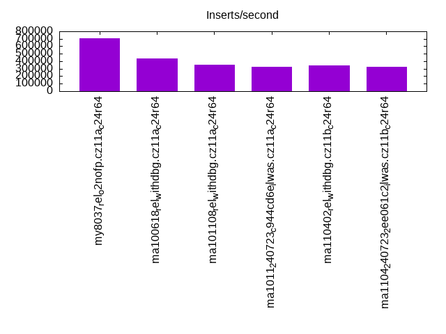
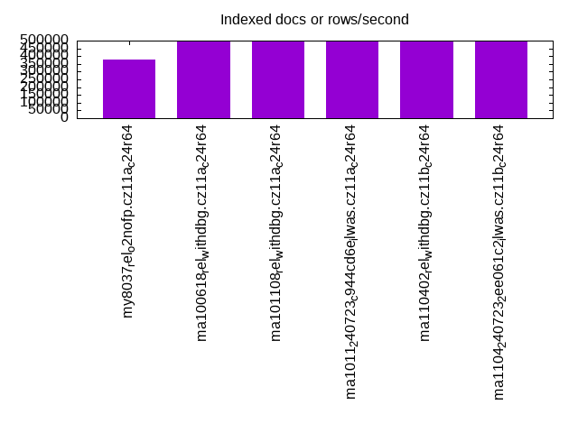
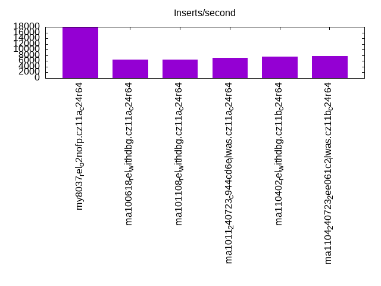
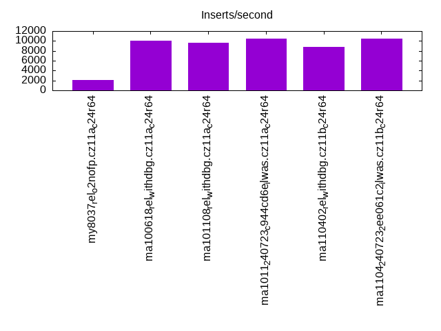
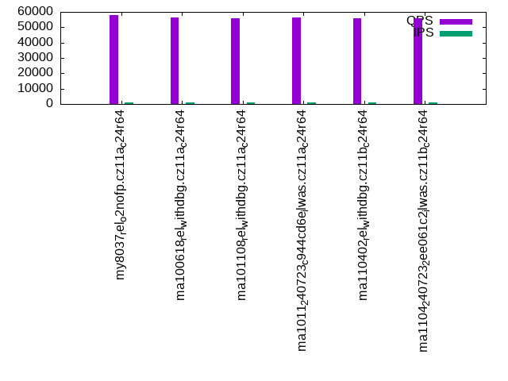
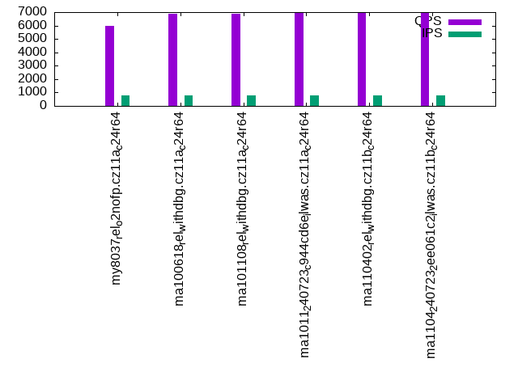
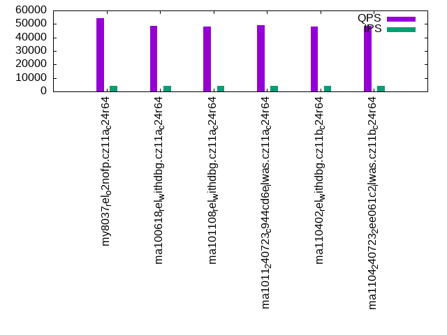
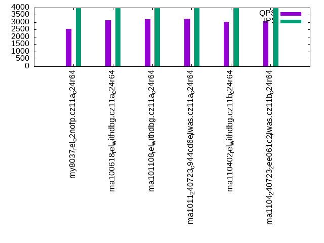
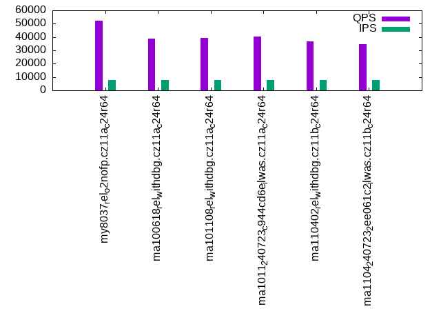
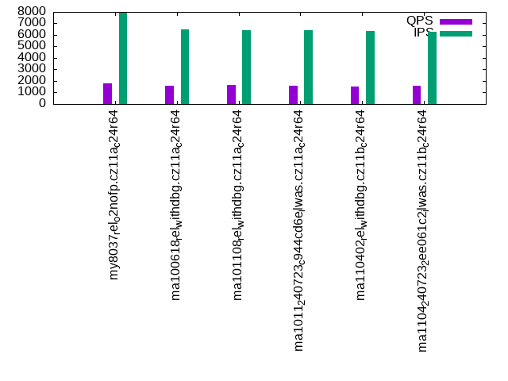

This is a report for the insert benchmark with 1024M docs and 8 client(s). It is generated by scripts (bash, awk, sed) and Tufte might not be impressed. An overview of the insert benchmark is here and a short update is here. Below, by DBMS, I mean DBMS+version.config. An example is my8020.c10b40 where my means MySQL, 8020 is version 8.0.20 and c10b40 is the name for the configuration file.
The test server has is a c2d-standard-30 with HT off, 16 cores, 64G RAM, Ubuntu 22.04 and ext4 using SW RAID 0 and 2 NVMe devices. The benchmark was run with 8 clients and there were 1 or 3 connections per client (1 for queries or inserts without rate limits, 1+1 for rate limited inserts+deletes). It uses 8 tables with a table per client. It loads 128M rows per table without secondary indexes, creates 3 secondary indexes per table, then inserts 4m+1m rows per table with a delete per insert to avoid growing the table. It then does 6 read+write tests for 1800s each that do queries as fast as possible with 100,100,500,500,1000,1000 inserts/s and the same for deletes/s per client concurrent with the queries. The database is larger than memory. Clients and the DBMS share one server. The per-database configs are in the per-database subdirectories here.
The tested DBMS are:
The numbers are inserts/s for l.i0, l.i1 and l.i2, indexed docs (or rows) /s for l.x and queries/s for qr100, qp100 thru qr1000, qp1000" The values are the average rate over the entire test for inserts (IPS) and queries (QPS). The range of values for IPS and QPS is split into 3 parts: bottom 25%, middle 50%, top 25%. Values in the bottom 25% have a red background, values in the top 25% have a green background and values in the middle have no color. A gray background is used for values that can be ignored because the DBMS did not sustain the target insert rate. Red backgrounds are not used when the minimum value is within 80% of the max value.
| dbms | l.i0 | l.x | l.i1 | l.i2 | qr100 | qp100 | qr500 | qp500 | qr1000 | qp1000 |
|---|---|---|---|---|---|---|---|---|---|---|
| my8037_rel_o2nofp.cz11a_c24r64 | 708650 | 377720 | 17689 | 2096 | 57680 | 5978 | 54229 | 2539 | 52174 | 1788 |
| ma100618_rel_withdbg.cz11a_c24r64 | 436116 | 492544 | 6541 | 10025 | 56563 | 6870 | 48742 | 3153 | 38554 | 1595 |
| ma101108_rel_withdbg.cz11a_c24r64 | 353469 | 495164 | 6592 | 9615 | 55885 | 6894 | 48087 | 3207 | 39082 | 1625 |
| ma1011_240723_c944cd6e_ilwas.cz11a_c24r64 | 329260 | 491599 | 7056 | 10512 | 56172 | 6954 | 49245 | 3254 | 40230 | 1604 |
| ma110402_rel_withdbg.cz11b_c24r64 | 339861 | 493494 | 7491 | 8782 | 55694 | 6938 | 48034 | 3033 | 36776 | 1532 |
| ma1104_240723_2ee061c2_ilwas.cz11b_c24r64 | 326115 | 493019 | 7837 | 10526 | 55787 | 6971 | 48487 | 3065 | 34443 | 1559 |
This table has relative throughput, throughput for the DBMS relative to the DBMS in the first line, using the absolute throughput from the previous table. Values less than 0.95 have a yellow background. Values greater than 1.05 have a blue background.
| dbms | l.i0 | l.x | l.i1 | l.i2 | qr100 | qp100 | qr500 | qp500 | qr1000 | qp1000 |
|---|---|---|---|---|---|---|---|---|---|---|
| my8037_rel_o2nofp.cz11a_c24r64 | 1.00 | 1.00 | 1.00 | 1.00 | 1.00 | 1.00 | 1.00 | 1.00 | 1.00 | 1.00 |
| ma100618_rel_withdbg.cz11a_c24r64 | 0.62 | 1.30 | 0.37 | 4.78 | 0.98 | 1.15 | 0.90 | 1.24 | 0.74 | 0.89 |
| ma101108_rel_withdbg.cz11a_c24r64 | 0.50 | 1.31 | 0.37 | 4.59 | 0.97 | 1.15 | 0.89 | 1.26 | 0.75 | 0.91 |
| ma1011_240723_c944cd6e_ilwas.cz11a_c24r64 | 0.46 | 1.30 | 0.40 | 5.02 | 0.97 | 1.16 | 0.91 | 1.28 | 0.77 | 0.90 |
| ma110402_rel_withdbg.cz11b_c24r64 | 0.48 | 1.31 | 0.42 | 4.19 | 0.97 | 1.16 | 0.89 | 1.19 | 0.70 | 0.86 |
| ma1104_240723_2ee061c2_ilwas.cz11b_c24r64 | 0.46 | 1.31 | 0.44 | 5.02 | 0.97 | 1.17 | 0.89 | 1.21 | 0.66 | 0.87 |
This lists the average rate of inserts/s for the tests that do inserts concurrent with queries. For such tests the query rate is listed in the table above. The read+write tests are setup so that the insert rate should match the target rate every second. Cells that are not at least 95% of the target have a red background to indicate a failure to satisfy the target.
| dbms | qr100.L1 | qp100.L2 | qr500.L3 | qp500.L4 | qr1000.L5 | qp1000.L6 |
|---|---|---|---|---|---|---|
| my8037_rel_o2nofp.cz11a_c24r64 | 796 | 796 | 3980 | 3980 | 7965 | 7965 |
| ma100618_rel_withdbg.cz11a_c24r64 | 796 | 796 | 3978 | 3978 | 7943 | 6475 |
| ma101108_rel_withdbg.cz11a_c24r64 | 796 | 796 | 3978 | 3978 | 7947 | 6423 |
| ma1011_240723_c944cd6e_ilwas.cz11a_c24r64 | 796 | 796 | 3978 | 3980 | 7947 | 6428 |
| ma110402_rel_withdbg.cz11b_c24r64 | 796 | 796 | 3978 | 3978 | 7934 | 6355 |
| ma1104_240723_2ee061c2_ilwas.cz11b_c24r64 | 796 | 796 | 3978 | 3980 | 7938 | 6288 |
| target | 800 | 800 | 4000 | 4000 | 8000 | 8000 |
l.i0: load without secondary indexes. Graphs for performance per 1-second interval are here.
Average throughput:
Insert response time histogram: each cell has the percentage of responses that take <= the time in the header and max is the max response time in seconds. For the max column values in the top 25% of the range have a red background and in the bottom 25% of the range have a green background. The red background is not used when the min value is within 80% of the max value.
| dbms | 256us | 1ms | 4ms | 16ms | 64ms | 256ms | 1s | 4s | 16s | gt | max |
|---|---|---|---|---|---|---|---|---|---|---|---|
| my8037_rel_o2nofp.cz11a_c24r64 | 73.880 | 25.926 | 0.115 | 0.056 | 0.009 | 0.015 | 0.571 | ||||
| ma100618_rel_withdbg.cz11a_c24r64 | 17.875 | 81.763 | 0.281 | 0.043 | 0.004 | 0.034 | 0.502 | ||||
| ma101108_rel_withdbg.cz11a_c24r64 | 3.939 | 91.737 | 4.193 | 0.092 | 0.005 | 0.034 | 0.487 | ||||
| ma1011_240723_c944cd6e_ilwas.cz11a_c24r64 | 2.843 | 90.728 | 6.342 | 0.049 | 0.005 | 0.034 | 0.476 | ||||
| ma110402_rel_withdbg.cz11b_c24r64 | 3.415 | 90.791 | 5.657 | 0.099 | 0.005 | 0.034 | 0.469 | ||||
| ma1104_240723_2ee061c2_ilwas.cz11b_c24r64 | 1.910 | 91.755 | 6.249 | 0.050 | 0.004 | 0.034 | 0.478 |
Performance metrics for the DBMS listed above. Some are normalized by throughput, others are not. Legend for results is here.
ips qps rps rmbps wps wmbps rpq rkbpq wpi wkbpi csps cpups cspq cpupq dbgb1 dbgb2 rss maxop p50 p99 tag 708650 0 1 0.0 3930.1 262.0 0.000 0.000 0.006 0.379 124366 69.5 0.175 16 67.2 117.7 49.0 0.571 94199 47248 my8037_rel_o2nofp.cz11a_c24r64 436116 0 0 0.0 2261.9 121.6 0.000 0.000 0.005 0.285 552194 63.0 1.266 23 67.4 118.2 45.7 0.502 56240 35859 ma100618_rel_withdbg.cz11a_c24r64 353469 0 1813 7.1 1852.6 101.7 0.005 0.021 0.005 0.295 226874 48.3 0.642 22 67.4 118.2 45.7 0.487 45851 27271 ma101108_rel_withdbg.cz11a_c24r64 329260 0 0 0.0 1722.8 94.7 0.000 0.000 0.005 0.294 261299 55.3 0.794 27 67.4 118.2 45.7 0.476 42167 28170 ma1011_240723_c944cd6e_ilwas.cz11a_c24r64 339861 0 1811 7.1 1790.7 97.9 0.005 0.021 0.005 0.295 222643 48.9 0.655 23 67.4 118.2 45.7 0.469 44066 26172 ma110402_rel_withdbg.cz11b_c24r64 326115 0 0 0.0 1720.1 93.8 0.000 0.000 0.005 0.295 305360 54.4 0.936 27 67.4 118.2 45.7 0.478 41656 27372 ma1104_240723_2ee061c2_ilwas.cz11b_c24r64
l.x: create secondary indexes.
Average throughput:
Performance metrics for the DBMS listed above. Some are normalized by throughput, others are not. Legend for results is here.
ips qps rps rmbps wps wmbps rpq rkbpq wpi wkbpi csps cpups cspq cpupq dbgb1 dbgb2 rss maxop p50 p99 tag 377720 0 4655 537.6 8750.8 473.3 0.012 1.457 0.023 1.283 24215 35.7 0.064 15 154.6 205.1 49.1 0.009 NA NA my8037_rel_o2nofp.cz11a_c24r64 492544 0 3013 424.1 2765.2 473.0 0.006 0.882 0.006 0.983 12571 17.7 0.026 6 142.8 193.6 45.8 0.002 NA NA ma100618_rel_withdbg.cz11a_c24r64 495164 0 3049 425.5 2720.2 473.3 0.006 0.880 0.005 0.979 11925 17.0 0.024 5 142.8 193.6 45.9 0.002 NA NA ma101108_rel_withdbg.cz11a_c24r64 491599 0 2997 423.0 2700.4 469.8 0.006 0.881 0.005 0.979 11822 17.8 0.024 6 142.8 193.6 45.9 0.002 NA NA ma1011_240723_c944cd6e_ilwas.cz11a_c24r64 493494 0 2970 424.0 2764.6 471.8 0.006 0.880 0.006 0.979 12098 18.4 0.025 6 142.8 193.6 45.9 0.002 NA NA ma110402_rel_withdbg.cz11b_c24r64 493019 0 2972 424.1 2724.0 471.0 0.006 0.881 0.006 0.978 11949 18.3 0.024 6 142.8 193.6 45.9 0.002 NA NA ma1104_240723_2ee061c2_ilwas.cz11b_c24r64
l.i1: continue load after secondary indexes created with 50 inserts per transaction. Graphs for performance per 1-second interval are here.
Average throughput:
Insert response time histogram: each cell has the percentage of responses that take <= the time in the header and max is the max response time in seconds. For the max column values in the top 25% of the range have a red background and in the bottom 25% of the range have a green background. The red background is not used when the min value is within 80% of the max value.
| dbms | 256us | 1ms | 4ms | 16ms | 64ms | 256ms | 1s | 4s | 16s | gt | max |
|---|---|---|---|---|---|---|---|---|---|---|---|
| my8037_rel_o2nofp.cz11a_c24r64 | 10.943 | 62.113 | 19.785 | 6.642 | 0.518 | 0.826 | |||||
| ma100618_rel_withdbg.cz11a_c24r64 | 2.086 | 80.115 | 14.853 | 2.811 | 0.129 | 0.003 | 0.002 | 36.893 | |||
| ma101108_rel_withdbg.cz11a_c24r64 | 1.543 | 80.552 | 15.063 | 2.691 | 0.146 | 0.004 | 0.001 | 47.108 | |||
| ma1011_240723_c944cd6e_ilwas.cz11a_c24r64 | nonzero | 3.194 | 81.417 | 13.318 | 1.910 | 0.155 | 0.004 | 0.002 | 37.162 | ||
| ma110402_rel_withdbg.cz11b_c24r64 | 0.001 | 2.626 | 81.833 | 14.750 | 0.568 | 0.210 | 0.007 | 0.005 | 34.043 | ||
| ma1104_240723_2ee061c2_ilwas.cz11b_c24r64 | 0.006 | 3.625 | 82.583 | 13.323 | 0.257 | 0.193 | 0.009 | 0.005 | 35.004 |
Delete response time histogram: each cell has the percentage of responses that take <= the time in the header and max is the max response time in seconds. For the max column values in the top 25% of the range have a red background and in the bottom 25% of the range have a green background. The red background is not used when the min value is within 80% of the max value.
| dbms | 256us | 1ms | 4ms | 16ms | 64ms | 256ms | 1s | 4s | 16s | gt | max |
|---|---|---|---|---|---|---|---|---|---|---|---|
| my8037_rel_o2nofp.cz11a_c24r64 | 35.161 | 57.562 | 6.477 | 0.682 | 0.117 | 0.641 | |||||
| ma100618_rel_withdbg.cz11a_c24r64 | nonzero | 11.341 | 79.814 | 6.793 | 2.030 | 0.020 | 0.002 | 0.001 | 23.192 | ||
| ma101108_rel_withdbg.cz11a_c24r64 | 10.722 | 80.768 | 6.539 | 1.948 | 0.020 | 0.002 | 12.208 | ||||
| ma1011_240723_c944cd6e_ilwas.cz11a_c24r64 | 0.003 | 13.301 | 80.305 | 4.978 | 1.397 | 0.013 | 0.002 | nonzero | 22.205 | ||
| ma110402_rel_withdbg.cz11b_c24r64 | 0.007 | 8.758 | 84.762 | 5.828 | 0.472 | 0.165 | 0.006 | 0.002 | 29.809 | ||
| ma1104_240723_2ee061c2_ilwas.cz11b_c24r64 | 0.029 | 9.831 | 85.274 | 4.457 | 0.249 | 0.150 | 0.007 | 0.002 | 25.433 |
Performance metrics for the DBMS listed above. Some are normalized by throughput, others are not. Legend for results is here.
ips qps rps rmbps wps wmbps rpq rkbpq wpi wkbpi csps cpups cspq cpupq dbgb1 dbgb2 rss maxop p50 p99 tag 17689 0 11316 176.8 22657.2 622.4 0.640 10.235 1.281 36.027 133538 35.3 7.549 319 214.3 277.1 49.1 0.826 2048 350 my8037_rel_o2nofp.cz11a_c24r64 6541 0 17092 267.1 17801.6 537.9 2.613 41.808 2.721 84.201 187496 13.5 28.664 330 170.5 221.4 45.9 36.893 750 0 ma100618_rel_withdbg.cz11a_c24r64 6592 0 17631 271.0 17858.8 538.8 2.674 42.096 2.709 83.698 195350 13.2 29.632 320 170.5 221.4 45.9 47.108 799 0 ma101108_rel_withdbg.cz11a_c24r64 7056 0 18122 283.2 18300.8 552.3 2.568 41.093 2.594 80.144 187427 19.7 26.562 447 170.6 221.4 45.9 37.162 999 0 ma1011_240723_c944cd6e_ilwas.cz11a_c24r64 7491 0 19866 305.3 18943.5 566.8 2.652 41.738 2.529 77.478 204623 14.3 27.317 305 170.6 221.4 45.9 34.043 1000 0 ma110402_rel_withdbg.cz11b_c24r64 7837 0 20102 314.1 19368.6 578.6 2.565 41.040 2.471 75.596 192258 21.4 24.531 437 170.6 221.4 45.9 35.004 1049 0 ma1104_240723_2ee061c2_ilwas.cz11b_c24r64
l.i2: continue load after secondary indexes created with 5 inserts per transaction. Graphs for performance per 1-second interval are here.
Average throughput:
Insert response time histogram: each cell has the percentage of responses that take <= the time in the header and max is the max response time in seconds. For the max column values in the top 25% of the range have a red background and in the bottom 25% of the range have a green background. The red background is not used when the min value is within 80% of the max value.
| dbms | 256us | 1ms | 4ms | 16ms | 64ms | 256ms | 1s | 4s | 16s | gt | max |
|---|---|---|---|---|---|---|---|---|---|---|---|
| my8037_rel_o2nofp.cz11a_c24r64 | 0.028 | 8.574 | 45.126 | 45.491 | 0.781 | nonzero | 0.285 | ||||
| ma100618_rel_withdbg.cz11a_c24r64 | 0.246 | 8.538 | 62.873 | 26.754 | 1.563 | 0.025 | 0.001 | 0.304 | |||
| ma101108_rel_withdbg.cz11a_c24r64 | 0.033 | 3.389 | 66.526 | 28.511 | 1.524 | 0.017 | 0.001 | 0.338 | |||
| ma1011_240723_c944cd6e_ilwas.cz11a_c24r64 | 0.339 | 11.590 | 63.323 | 23.304 | 1.402 | 0.041 | 0.001 | 0.345 | |||
| ma110402_rel_withdbg.cz11b_c24r64 | 0.179 | 8.359 | 67.717 | 21.866 | 1.388 | 0.462 | 0.028 | 0.548 | |||
| ma1104_240723_2ee061c2_ilwas.cz11b_c24r64 | 1.195 | 23.322 | 55.140 | 18.803 | 1.183 | 0.347 | 0.010 | 0.481 |
Delete response time histogram: each cell has the percentage of responses that take <= the time in the header and max is the max response time in seconds. For the max column values in the top 25% of the range have a red background and in the bottom 25% of the range have a green background. The red background is not used when the min value is within 80% of the max value.
| dbms | 256us | 1ms | 4ms | 16ms | 64ms | 256ms | 1s | 4s | 16s | gt | max |
|---|---|---|---|---|---|---|---|---|---|---|---|
| my8037_rel_o2nofp.cz11a_c24r64 | 0.006 | 16.163 | 39.287 | 44.070 | 0.474 | nonzero | 0.279 | ||||
| ma100618_rel_withdbg.cz11a_c24r64 | 0.618 | 12.315 | 63.352 | 22.528 | 1.169 | 0.017 | 0.001 | 0.311 | |||
| ma101108_rel_withdbg.cz11a_c24r64 | 0.092 | 5.722 | 68.898 | 24.120 | 1.154 | 0.013 | 0.001 | 0.293 | |||
| ma1011_240723_c944cd6e_ilwas.cz11a_c24r64 | 1.000 | 16.858 | 61.793 | 19.280 | 1.042 | 0.026 | nonzero | 0.331 | |||
| ma110402_rel_withdbg.cz11b_c24r64 | 0.370 | 11.146 | 68.221 | 18.634 | 1.176 | 0.437 | 0.017 | 0.481 | |||
| ma1104_240723_2ee061c2_ilwas.cz11b_c24r64 | 2.203 | 27.378 | 52.765 | 16.335 | 0.990 | 0.323 | 0.005 | 0.544 |
Performance metrics for the DBMS listed above. Some are normalized by throughput, others are not. Legend for results is here.
ips qps rps rmbps wps wmbps rpq rkbpq wpi wkbpi csps cpups cspq cpupq dbgb1 dbgb2 rss maxop p50 p99 tag 2096 0 15998 250.0 24298.8 623.6 7.631 122.102 11.591 304.586 137902 24.5 65.780 1870 214.3 276.3 49.1 0.285 155 100 my8037_rel_o2nofp.cz11a_c24r64 10025 0 21591 337.4 18485.1 571.8 2.154 34.459 1.844 58.406 242578 22.8 24.197 364 170.6 221.4 45.9 0.304 1299 1018 ma100618_rel_withdbg.cz11a_c24r64 9615 0 24006 351.8 18692.7 576.7 2.497 37.467 1.944 61.412 252946 22.6 26.307 376 170.6 221.4 45.9 0.338 1314 1074 ma101108_rel_withdbg.cz11a_c24r64 10512 0 21310 333.0 18663.7 577.3 2.027 32.433 1.775 56.229 233194 29.8 22.183 454 170.6 221.5 45.9 0.345 1264 974 ma1011_240723_c944cd6e_ilwas.cz11a_c24r64 8782 0 20003 291.2 17958.0 551.4 2.278 33.960 2.045 64.301 218242 19.8 24.852 361 170.6 221.4 45.9 0.548 1655 30 ma110402_rel_withdbg.cz11b_c24r64 10526 0 18395 287.4 18185.8 561.6 1.748 27.961 1.728 54.633 209835 27.9 19.934 424 170.6 221.4 45.9 0.481 1259 25 ma1104_240723_2ee061c2_ilwas.cz11b_c24r64
qr100.L1: range queries with 100 insert/s per client. Graphs for performance per 1-second interval are here.
Average throughput:
Query response time histogram: each cell has the percentage of responses that take <= the time in the header and max is the max response time in seconds. For max values in the top 25% of the range have a red background and in the bottom 25% of the range have a green background. The red background is not used when the min value is within 80% of the max value.
| dbms | 256us | 1ms | 4ms | 16ms | 64ms | 256ms | 1s | 4s | 16s | gt | max |
|---|---|---|---|---|---|---|---|---|---|---|---|
| my8037_rel_o2nofp.cz11a_c24r64 | 99.803 | 0.195 | 0.002 | nonzero | nonzero | 0.030 | |||||
| ma100618_rel_withdbg.cz11a_c24r64 | 99.323 | 0.615 | 0.059 | 0.003 | nonzero | nonzero | 0.111 | ||||
| ma101108_rel_withdbg.cz11a_c24r64 | 99.290 | 0.643 | 0.063 | 0.003 | nonzero | nonzero | 0.138 | ||||
| ma1011_240723_c944cd6e_ilwas.cz11a_c24r64 | 99.361 | 0.577 | 0.058 | 0.003 | nonzero | nonzero | 0.093 | ||||
| ma110402_rel_withdbg.cz11b_c24r64 | 99.301 | 0.640 | 0.056 | 0.003 | nonzero | nonzero | 0.088 | ||||
| ma1104_240723_2ee061c2_ilwas.cz11b_c24r64 | 99.372 | 0.576 | 0.049 | 0.003 | nonzero | 0.020 |
Insert response time histogram: each cell has the percentage of responses that take <= the time in the header and max is the max response time in seconds. For max values in the top 25% of the range have a red background and in the bottom 25% of the range have a green background. The red background is not used when the min value is within 80% of the max value.
| dbms | 256us | 1ms | 4ms | 16ms | 64ms | 256ms | 1s | 4s | 16s | gt | max |
|---|---|---|---|---|---|---|---|---|---|---|---|
| my8037_rel_o2nofp.cz11a_c24r64 | 95.253 | 4.747 | 0.044 | ||||||||
| ma100618_rel_withdbg.cz11a_c24r64 | 0.003 | 57.115 | 42.705 | 0.177 | 0.138 | ||||||
| ma101108_rel_withdbg.cz11a_c24r64 | 61.295 | 38.663 | 0.042 | 0.169 | |||||||
| ma1011_240723_c944cd6e_ilwas.cz11a_c24r64 | 0.017 | 64.368 | 35.510 | 0.104 | 0.161 | ||||||
| ma110402_rel_withdbg.cz11b_c24r64 | 0.073 | 56.358 | 43.368 | 0.201 | 0.109 | ||||||
| ma1104_240723_2ee061c2_ilwas.cz11b_c24r64 | 0.899 | 60.417 | 38.674 | 0.010 | 0.081 |
Delete response time histogram: each cell has the percentage of responses that take <= the time in the header and max is the max response time in seconds. For max values in the top 25% of the range have a red background and in the bottom 25% of the range have a green background. The red background is not used when the min value is within 80% of the max value.
| dbms | 256us | 1ms | 4ms | 16ms | 64ms | 256ms | 1s | 4s | 16s | gt | max |
|---|---|---|---|---|---|---|---|---|---|---|---|
| my8037_rel_o2nofp.cz11a_c24r64 | 98.319 | 1.681 | 0.010 | ||||||||
| ma100618_rel_withdbg.cz11a_c24r64 | 0.104 | 78.163 | 21.594 | 0.139 | 0.136 | ||||||
| ma101108_rel_withdbg.cz11a_c24r64 | 0.007 | 81.865 | 18.090 | 0.038 | 0.169 | ||||||
| ma1011_240723_c944cd6e_ilwas.cz11a_c24r64 | 0.243 | 82.184 | 17.490 | 0.083 | 0.119 | ||||||
| ma110402_rel_withdbg.cz11b_c24r64 | 0.378 | 76.056 | 23.389 | 0.177 | 0.106 | ||||||
| ma1104_240723_2ee061c2_ilwas.cz11b_c24r64 | 1.910 | 75.868 | 22.215 | 0.007 | 0.072 |
Performance metrics for the DBMS listed above. Some are normalized by throughput, others are not. Legend for results is here.
ips qps rps rmbps wps wmbps rpq rkbpq wpi wkbpi csps cpups cspq cpupq dbgb1 dbgb2 rss maxop p50 p99 tag 796 57680 2007 31.4 2688.8 78.5 0.035 0.557 3.378 100.940 211717 51.7 3.671 143 214.3 276.3 49.1 0.030 7218 6952 my8037_rel_o2nofp.cz11a_c24r64 796 56563 2159 33.7 1068.1 33.9 0.038 0.611 1.343 43.673 219528 50.1 3.881 142 170.6 221.4 45.7 0.111 7131 3788 ma100618_rel_withdbg.cz11a_c24r64 796 55885 2187 33.8 1067.0 33.9 0.039 0.619 1.341 43.604 217410 50.2 3.890 144 170.6 221.4 45.7 0.138 7036 2190 ma101108_rel_withdbg.cz11a_c24r64 796 56172 2161 33.8 1068.9 34.0 0.038 0.615 1.343 43.674 214654 50.8 3.821 145 170.6 221.5 45.7 0.093 7144 6012 ma1011_240723_c944cd6e_ilwas.cz11a_c24r64 796 55694 2214 34.2 1090.0 34.6 0.040 0.629 1.370 44.571 217252 50.2 3.901 144 170.6 221.4 45.7 0.088 7064 1806 ma110402_rel_withdbg.cz11b_c24r64 796 55787 2190 34.2 1096.4 34.8 0.039 0.628 1.377 44.782 213579 50.8 3.828 146 170.6 221.4 45.7 0.020 7064 6523 ma1104_240723_2ee061c2_ilwas.cz11b_c24r64
qp100.L2: point queries with 100 insert/s per client. Graphs for performance per 1-second interval are here.
Average throughput:
Query response time histogram: each cell has the percentage of responses that take <= the time in the header and max is the max response time in seconds. For max values in the top 25% of the range have a red background and in the bottom 25% of the range have a green background. The red background is not used when the min value is within 80% of the max value.
| dbms | 256us | 1ms | 4ms | 16ms | 64ms | 256ms | 1s | 4s | 16s | gt | max |
|---|---|---|---|---|---|---|---|---|---|---|---|
| my8037_rel_o2nofp.cz11a_c24r64 | 0.787 | 29.630 | 69.117 | 0.448 | 0.019 | nonzero | 0.098 | ||||
| ma100618_rel_withdbg.cz11a_c24r64 | 1.537 | 39.557 | 58.580 | 0.295 | 0.030 | 0.001 | nonzero | 0.305 | |||
| ma101108_rel_withdbg.cz11a_c24r64 | 0.609 | 41.411 | 57.616 | 0.328 | 0.036 | nonzero | nonzero | 0.311 | |||
| ma1011_240723_c944cd6e_ilwas.cz11a_c24r64 | 0.717 | 42.617 | 56.291 | 0.334 | 0.040 | 0.001 | nonzero | 0.267 | |||
| ma110402_rel_withdbg.cz11b_c24r64 | 0.653 | 42.415 | 56.566 | 0.325 | 0.041 | nonzero | 0.242 | ||||
| ma1104_240723_2ee061c2_ilwas.cz11b_c24r64 | 0.716 | 42.997 | 55.903 | 0.340 | 0.044 | nonzero | nonzero | 0.257 |
Insert response time histogram: each cell has the percentage of responses that take <= the time in the header and max is the max response time in seconds. For max values in the top 25% of the range have a red background and in the bottom 25% of the range have a green background. The red background is not used when the min value is within 80% of the max value.
| dbms | 256us | 1ms | 4ms | 16ms | 64ms | 256ms | 1s | 4s | 16s | gt | max |
|---|---|---|---|---|---|---|---|---|---|---|---|
| my8037_rel_o2nofp.cz11a_c24r64 | 10.535 | 89.024 | 0.441 | 0.132 | |||||||
| ma100618_rel_withdbg.cz11a_c24r64 | 0.160 | 97.774 | 2.066 | 0.135 | |||||||
| ma101108_rel_withdbg.cz11a_c24r64 | 0.125 | 96.719 | 3.146 | 0.010 | 0.392 | ||||||
| ma1011_240723_c944cd6e_ilwas.cz11a_c24r64 | 0.194 | 94.465 | 5.312 | 0.028 | 0.358 | ||||||
| ma110402_rel_withdbg.cz11b_c24r64 | 0.149 | 96.531 | 3.309 | 0.010 | 0.305 | ||||||
| ma1104_240723_2ee061c2_ilwas.cz11b_c24r64 | 0.156 | 94.587 | 5.229 | 0.028 | 0.310 |
Delete response time histogram: each cell has the percentage of responses that take <= the time in the header and max is the max response time in seconds. For max values in the top 25% of the range have a red background and in the bottom 25% of the range have a green background. The red background is not used when the min value is within 80% of the max value.
| dbms | 256us | 1ms | 4ms | 16ms | 64ms | 256ms | 1s | 4s | 16s | gt | max |
|---|---|---|---|---|---|---|---|---|---|---|---|
| my8037_rel_o2nofp.cz11a_c24r64 | 99.524 | 0.476 | 0.012 | ||||||||
| ma100618_rel_withdbg.cz11a_c24r64 | 0.503 | 98.375 | 1.122 | 0.127 | |||||||
| ma101108_rel_withdbg.cz11a_c24r64 | 0.368 | 98.205 | 1.420 | 0.007 | 0.453 | ||||||
| ma1011_240723_c944cd6e_ilwas.cz11a_c24r64 | 0.503 | 96.406 | 3.062 | 0.028 | 0.350 | ||||||
| ma110402_rel_withdbg.cz11b_c24r64 | 0.358 | 97.833 | 1.799 | 0.010 | 0.309 | ||||||
| ma1104_240723_2ee061c2_ilwas.cz11b_c24r64 | 0.524 | 96.205 | 3.247 | 0.024 | 0.313 |
Performance metrics for the DBMS listed above. Some are normalized by throughput, others are not. Legend for results is here.
ips qps rps rmbps wps wmbps rpq rkbpq wpi wkbpi csps cpups cspq cpupq dbgb1 dbgb2 rss maxop p50 p99 tag 796 5978 29229 456.7 6808.9 189.5 4.890 78.235 8.554 243.839 102007 16.9 17.065 452 214.3 276.3 49.1 0.098 831 272 my8037_rel_o2nofp.cz11a_c24r64 796 6870 32628 509.8 4647.8 140.1 4.749 75.992 5.843 180.359 118092 14.0 17.190 326 170.6 221.4 45.7 0.305 975 304 ma100618_rel_withdbg.cz11a_c24r64 796 6894 33056 516.2 4650.1 140.1 4.795 76.671 5.846 180.392 120164 14.1 17.430 327 170.6 221.4 45.7 0.311 911 320 ma101108_rel_withdbg.cz11a_c24r64 796 6954 33153 518.0 4654.4 140.3 4.767 76.277 5.851 180.570 117678 14.7 16.922 338 170.6 221.5 45.7 0.267 943 304 ma1011_240723_c944cd6e_ilwas.cz11a_c24r64 796 6938 33049 516.1 4655.0 140.3 4.763 76.167 5.852 180.550 122155 14.1 17.606 325 170.6 221.4 45.7 0.242 927 304 ma110402_rel_withdbg.cz11b_c24r64 796 6971 33053 516.5 4659.4 140.4 4.741 75.861 5.853 180.615 119407 14.6 17.128 335 170.6 221.4 45.7 0.257 975 320 ma1104_240723_2ee061c2_ilwas.cz11b_c24r64
qr500.L3: range queries with 500 insert/s per client. Graphs for performance per 1-second interval are here.
Average throughput:
Query response time histogram: each cell has the percentage of responses that take <= the time in the header and max is the max response time in seconds. For max values in the top 25% of the range have a red background and in the bottom 25% of the range have a green background. The red background is not used when the min value is within 80% of the max value.
| dbms | 256us | 1ms | 4ms | 16ms | 64ms | 256ms | 1s | 4s | 16s | gt | max |
|---|---|---|---|---|---|---|---|---|---|---|---|
| my8037_rel_o2nofp.cz11a_c24r64 | 99.343 | 0.630 | 0.023 | 0.003 | nonzero | nonzero | 0.113 | ||||
| ma100618_rel_withdbg.cz11a_c24r64 | 96.658 | 3.085 | 0.217 | 0.038 | 0.001 | nonzero | nonzero | 0.306 | |||
| ma101108_rel_withdbg.cz11a_c24r64 | 96.553 | 3.171 | 0.236 | 0.039 | 0.001 | nonzero | 0.251 | ||||
| ma1011_240723_c944cd6e_ilwas.cz11a_c24r64 | 96.980 | 2.761 | 0.219 | 0.040 | 0.001 | nonzero | 0.236 | ||||
| ma110402_rel_withdbg.cz11b_c24r64 | 96.458 | 3.285 | 0.225 | 0.030 | 0.002 | nonzero | nonzero | 0.292 | |||
| ma1104_240723_2ee061c2_ilwas.cz11b_c24r64 | 96.764 | 2.958 | 0.242 | 0.034 | 0.002 | nonzero | nonzero | 0.334 |
Insert response time histogram: each cell has the percentage of responses that take <= the time in the header and max is the max response time in seconds. For max values in the top 25% of the range have a red background and in the bottom 25% of the range have a green background. The red background is not used when the min value is within 80% of the max value.
| dbms | 256us | 1ms | 4ms | 16ms | 64ms | 256ms | 1s | 4s | 16s | gt | max |
|---|---|---|---|---|---|---|---|---|---|---|---|
| my8037_rel_o2nofp.cz11a_c24r64 | 0.031 | 78.346 | 21.575 | 0.049 | 0.136 | ||||||
| ma100618_rel_withdbg.cz11a_c24r64 | 54.735 | 44.681 | 0.525 | 0.059 | 0.399 | ||||||
| ma101108_rel_withdbg.cz11a_c24r64 | 51.988 | 47.343 | 0.636 | 0.033 | 0.376 | ||||||
| ma1011_240723_c944cd6e_ilwas.cz11a_c24r64 | 57.272 | 42.199 | 0.503 | 0.026 | 0.375 | ||||||
| ma110402_rel_withdbg.cz11b_c24r64 | 51.957 | 47.313 | 0.632 | 0.098 | 0.415 | ||||||
| ma1104_240723_2ee061c2_ilwas.cz11b_c24r64 | 53.326 | 46.054 | 0.535 | 0.084 | 0.381 |
Delete response time histogram: each cell has the percentage of responses that take <= the time in the header and max is the max response time in seconds. For max values in the top 25% of the range have a red background and in the bottom 25% of the range have a green background. The red background is not used when the min value is within 80% of the max value.
| dbms | 256us | 1ms | 4ms | 16ms | 64ms | 256ms | 1s | 4s | 16s | gt | max |
|---|---|---|---|---|---|---|---|---|---|---|---|
| my8037_rel_o2nofp.cz11a_c24r64 | 73.582 | 26.288 | 0.130 | 0.001 | 0.082 | ||||||
| ma100618_rel_withdbg.cz11a_c24r64 | 76.758 | 22.863 | 0.327 | 0.052 | 0.395 | ||||||
| ma101108_rel_withdbg.cz11a_c24r64 | 73.522 | 26.044 | 0.409 | 0.025 | 0.375 | ||||||
| ma1011_240723_c944cd6e_ilwas.cz11a_c24r64 | 77.977 | 21.692 | 0.307 | 0.024 | 0.372 | ||||||
| ma110402_rel_withdbg.cz11b_c24r64 | 75.836 | 23.665 | 0.424 | 0.074 | 0.366 | ||||||
| ma1104_240723_2ee061c2_ilwas.cz11b_c24r64 | 74.692 | 24.919 | 0.328 | 0.061 | 0.368 |
Performance metrics for the DBMS listed above. Some are normalized by throughput, others are not. Legend for results is here.
ips qps rps rmbps wps wmbps rpq rkbpq wpi wkbpi csps cpups cspq cpupq dbgb1 dbgb2 rss maxop p50 p99 tag 3980 54229 9012 140.8 12517.0 362.0 0.166 2.659 3.145 93.147 206751 60.0 3.813 177 214.3 276.3 49.1 0.113 6828 6329 my8037_rel_o2nofp.cz11a_c24r64 3978 48742 10496 164.0 9092.7 279.3 0.215 3.445 2.286 71.904 236149 51.9 4.845 170 170.6 221.4 45.7 0.306 6218 1646 ma100618_rel_withdbg.cz11a_c24r64 3978 48087 10673 164.5 9062.6 278.3 0.222 3.503 2.278 71.650 235566 51.8 4.899 172 170.6 221.4 45.7 0.251 6121 1582 ma101108_rel_withdbg.cz11a_c24r64 3978 49245 10487 163.9 9062.0 278.3 0.213 3.407 2.278 71.645 226133 53.7 4.592 174 170.6 221.5 45.7 0.236 6297 1711 ma1011_240723_c944cd6e_ilwas.cz11a_c24r64 3978 48034 10787 166.3 9166.9 281.5 0.225 3.545 2.304 72.466 237256 51.9 4.939 173 170.6 221.4 45.7 0.292 6139 1582 ma110402_rel_withdbg.cz11b_c24r64 3978 48487 10582 165.3 9152.2 281.0 0.218 3.492 2.301 72.346 227832 53.9 4.699 178 170.6 221.4 45.7 0.334 6201 1662 ma1104_240723_2ee061c2_ilwas.cz11b_c24r64
qp500.L4: point queries with 500 insert/s per client. Graphs for performance per 1-second interval are here.
Average throughput:
Query response time histogram: each cell has the percentage of responses that take <= the time in the header and max is the max response time in seconds. For max values in the top 25% of the range have a red background and in the bottom 25% of the range have a green background. The red background is not used when the min value is within 80% of the max value.
| dbms | 256us | 1ms | 4ms | 16ms | 64ms | 256ms | 1s | 4s | 16s | gt | max |
|---|---|---|---|---|---|---|---|---|---|---|---|
| my8037_rel_o2nofp.cz11a_c24r64 | 0.001 | 0.401 | 88.582 | 10.071 | 0.890 | 0.055 | 0.243 | ||||
| ma100618_rel_withdbg.cz11a_c24r64 | 0.003 | 2.182 | 88.716 | 8.372 | 0.707 | 0.016 | 0.004 | 0.374 | |||
| ma101108_rel_withdbg.cz11a_c24r64 | 0.003 | 2.402 | 88.990 | 7.845 | 0.742 | 0.015 | 0.003 | 0.400 | |||
| ma1011_240723_c944cd6e_ilwas.cz11a_c24r64 | 0.003 | 2.570 | 88.991 | 7.697 | 0.720 | 0.016 | 0.003 | 0.385 | |||
| ma110402_rel_withdbg.cz11b_c24r64 | 0.004 | 2.772 | 85.256 | 11.242 | 0.704 | 0.018 | 0.004 | 0.387 | |||
| ma1104_240723_2ee061c2_ilwas.cz11b_c24r64 | 0.004 | 2.838 | 85.506 | 10.945 | 0.686 | 0.017 | 0.004 | 0.398 |
Insert response time histogram: each cell has the percentage of responses that take <= the time in the header and max is the max response time in seconds. For max values in the top 25% of the range have a red background and in the bottom 25% of the range have a green background. The red background is not used when the min value is within 80% of the max value.
| dbms | 256us | 1ms | 4ms | 16ms | 64ms | 256ms | 1s | 4s | 16s | gt | max |
|---|---|---|---|---|---|---|---|---|---|---|---|
| my8037_rel_o2nofp.cz11a_c24r64 | 44.051 | 52.226 | 3.718 | 0.004 | 0.320 | ||||||
| ma100618_rel_withdbg.cz11a_c24r64 | 0.349 | 80.828 | 18.524 | 0.300 | 0.559 | ||||||
| ma101108_rel_withdbg.cz11a_c24r64 | 0.295 | 79.700 | 19.734 | 0.271 | 0.503 | ||||||
| ma1011_240723_c944cd6e_ilwas.cz11a_c24r64 | 0.381 | 80.883 | 18.478 | 0.258 | 0.523 | ||||||
| ma110402_rel_withdbg.cz11b_c24r64 | 0.276 | 73.401 | 26.007 | 0.315 | 0.585 | ||||||
| ma1104_240723_2ee061c2_ilwas.cz11b_c24r64 | 0.353 | 74.968 | 24.341 | 0.338 | 0.499 |
Delete response time histogram: each cell has the percentage of responses that take <= the time in the header and max is the max response time in seconds. For max values in the top 25% of the range have a red background and in the bottom 25% of the range have a green background. The red background is not used when the min value is within 80% of the max value.
| dbms | 256us | 1ms | 4ms | 16ms | 64ms | 256ms | 1s | 4s | 16s | gt | max |
|---|---|---|---|---|---|---|---|---|---|---|---|
| my8037_rel_o2nofp.cz11a_c24r64 | 96.274 | 3.436 | 0.265 | 0.025 | 0.159 | ||||||
| ma100618_rel_withdbg.cz11a_c24r64 | 1.542 | 87.381 | 10.809 | 0.267 | 0.539 | ||||||
| ma101108_rel_withdbg.cz11a_c24r64 | 1.481 | 86.810 | 11.479 | 0.231 | 0.506 | ||||||
| ma1011_240723_c944cd6e_ilwas.cz11a_c24r64 | 1.772 | 87.680 | 10.328 | 0.219 | 0.542 | ||||||
| ma110402_rel_withdbg.cz11b_c24r64 | 1.190 | 82.819 | 15.705 | 0.285 | 0.496 | ||||||
| ma1104_240723_2ee061c2_ilwas.cz11b_c24r64 | 1.474 | 82.176 | 16.030 | 0.320 | 0.513 |
Performance metrics for the DBMS listed above. Some are normalized by throughput, others are not. Legend for results is here.
ips qps rps rmbps wps wmbps rpq rkbpq wpi wkbpi csps cpups cspq cpupq dbgb1 dbgb2 rss maxop p50 p99 tag 3980 2539 31591 493.6 19216.9 493.4 12.441 199.051 4.828 126.934 138021 22.8 54.354 1437 214.3 276.4 49.1 0.243 320 176 my8037_rel_o2nofp.cz11a_c24r64 3978 3153 37457 585.3 13784.2 419.7 11.879 190.066 3.465 108.049 186380 15.7 59.108 797 170.6 221.4 45.7 0.374 416 176 ma100618_rel_withdbg.cz11a_c24r64 3978 3207 37926 590.7 13849.4 421.6 11.827 188.635 3.482 108.527 195588 15.9 60.994 793 170.6 221.4 45.7 0.400 416 176 ma101108_rel_withdbg.cz11a_c24r64 3980 3254 38141 596.0 13879.0 422.5 11.720 187.519 3.487 108.696 183186 18.5 56.289 910 170.6 221.5 45.7 0.385 416 176 ma1011_240723_c944cd6e_ilwas.cz11a_c24r64 3978 3033 36880 574.3 14276.5 434.6 12.161 193.933 3.589 111.885 201870 15.6 66.567 823 170.6 221.4 45.7 0.387 384 160 ma110402_rel_withdbg.cz11b_c24r64 3980 3065 36991 578.0 14296.4 435.2 12.069 193.100 3.592 111.969 189643 18.5 61.874 966 170.6 221.4 45.7 0.398 400 176 ma1104_240723_2ee061c2_ilwas.cz11b_c24r64
qr1000.L5: range queries with 1000 insert/s per client. Graphs for performance per 1-second interval are here.
Average throughput:
Query response time histogram: each cell has the percentage of responses that take <= the time in the header and max is the max response time in seconds. For max values in the top 25% of the range have a red background and in the bottom 25% of the range have a green background. The red background is not used when the min value is within 80% of the max value.
| dbms | 256us | 1ms | 4ms | 16ms | 64ms | 256ms | 1s | 4s | 16s | gt | max |
|---|---|---|---|---|---|---|---|---|---|---|---|
| my8037_rel_o2nofp.cz11a_c24r64 | 98.900 | 1.038 | 0.053 | 0.009 | 0.001 | nonzero | 0.165 | ||||
| ma100618_rel_withdbg.cz11a_c24r64 | 91.930 | 7.200 | 0.753 | 0.110 | 0.006 | nonzero | nonzero | 0.370 | |||
| ma101108_rel_withdbg.cz11a_c24r64 | 92.146 | 7.078 | 0.687 | 0.084 | 0.004 | nonzero | nonzero | 0.381 | |||
| ma1011_240723_c944cd6e_ilwas.cz11a_c24r64 | 92.746 | 6.503 | 0.651 | 0.095 | 0.004 | nonzero | nonzero | 0.315 | |||
| ma110402_rel_withdbg.cz11b_c24r64 | 91.032 | 7.952 | 0.872 | 0.132 | 0.010 | 0.002 | nonzero | 0.340 | |||
| ma1104_240723_2ee061c2_ilwas.cz11b_c24r64 | 90.452 | 8.291 | 0.967 | 0.269 | 0.016 | 0.005 | nonzero | 0.440 |
Insert response time histogram: each cell has the percentage of responses that take <= the time in the header and max is the max response time in seconds. For max values in the top 25% of the range have a red background and in the bottom 25% of the range have a green background. The red background is not used when the min value is within 80% of the max value.
| dbms | 256us | 1ms | 4ms | 16ms | 64ms | 256ms | 1s | 4s | 16s | gt | max |
|---|---|---|---|---|---|---|---|---|---|---|---|
| my8037_rel_o2nofp.cz11a_c24r64 | 0.081 | 76.088 | 23.760 | 0.071 | 0.192 | ||||||
| ma100618_rel_withdbg.cz11a_c24r64 | 25.559 | 73.382 | 0.987 | 0.073 | 0.438 | ||||||
| ma101108_rel_withdbg.cz11a_c24r64 | 28.133 | 71.000 | 0.802 | 0.064 | 0.425 | ||||||
| ma1011_240723_c944cd6e_ilwas.cz11a_c24r64 | 28.945 | 70.145 | 0.854 | 0.056 | 0.448 | ||||||
| ma110402_rel_withdbg.cz11b_c24r64 | 20.072 | 78.332 | 1.513 | 0.083 | 0.407 | ||||||
| ma1104_240723_2ee061c2_ilwas.cz11b_c24r64 | 22.476 | 74.813 | 2.229 | 0.482 | 0.491 |
Delete response time histogram: each cell has the percentage of responses that take <= the time in the header and max is the max response time in seconds. For max values in the top 25% of the range have a red background and in the bottom 25% of the range have a green background. The red background is not used when the min value is within 80% of the max value.
| dbms | 256us | 1ms | 4ms | 16ms | 64ms | 256ms | 1s | 4s | 16s | gt | max |
|---|---|---|---|---|---|---|---|---|---|---|---|
| my8037_rel_o2nofp.cz11a_c24r64 | 77.040 | 22.625 | 0.332 | 0.003 | 0.095 | ||||||
| ma100618_rel_withdbg.cz11a_c24r64 | 46.634 | 52.589 | 0.718 | 0.059 | 0.432 | ||||||
| ma101108_rel_withdbg.cz11a_c24r64 | 52.725 | 46.614 | 0.613 | 0.049 | 0.418 | ||||||
| ma1011_240723_c944cd6e_ilwas.cz11a_c24r64 | 52.733 | 46.611 | 0.610 | 0.045 | 0.438 | ||||||
| ma110402_rel_withdbg.cz11b_c24r64 | 38.969 | 59.832 | 1.134 | 0.065 | 0.409 | ||||||
| ma1104_240723_2ee061c2_ilwas.cz11b_c24r64 | 41.949 | 56.165 | 1.481 | 0.406 | 0.479 |
Performance metrics for the DBMS listed above. Some are normalized by throughput, others are not. Legend for results is here.
ips qps rps rmbps wps wmbps rpq rkbpq wpi wkbpi csps cpups cspq cpupq dbgb1 dbgb2 rss maxop p50 p99 tag 7965 52174 13974 218.3 20809.8 584.8 0.268 4.285 2.613 75.185 211445 67.7 4.053 208 214.3 276.4 49.1 0.165 6632 5802 my8037_rel_o2nofp.cz11a_c24r64 7943 38554 19229 300.5 18313.2 561.2 0.499 7.980 2.306 72.347 273352 53.6 7.090 222 170.6 221.5 45.7 0.370 4955 1087 ma100618_rel_withdbg.cz11a_c24r64 7947 39082 19580 301.7 18271.6 559.7 0.501 7.904 2.299 72.119 273431 54.2 6.996 222 170.6 221.5 45.7 0.381 5003 1183 ma101108_rel_withdbg.cz11a_c24r64 7947 40230 19230 300.5 18277.2 559.9 0.478 7.648 2.300 72.142 256523 59.1 6.376 235 170.7 221.5 45.7 0.315 5323 1087 ma1011_240723_c944cd6e_ilwas.cz11a_c24r64 7934 36776 19790 304.9 18552.8 568.1 0.538 8.488 2.338 73.328 277407 52.5 7.543 228 170.6 221.5 45.7 0.340 5036 912 ma110402_rel_withdbg.cz11b_c24r64 7938 34443 19471 304.2 18444.4 564.9 0.565 9.045 2.324 72.869 254820 54.4 7.398 253 170.6 221.5 45.7 0.440 4491 1072 ma1104_240723_2ee061c2_ilwas.cz11b_c24r64
qp1000.L6: point queries with 1000 insert/s per client. Graphs for performance per 1-second interval are here.
Average throughput:
Query response time histogram: each cell has the percentage of responses that take <= the time in the header and max is the max response time in seconds. For max values in the top 25% of the range have a red background and in the bottom 25% of the range have a green background. The red background is not used when the min value is within 80% of the max value.
| dbms | 256us | 1ms | 4ms | 16ms | 64ms | 256ms | 1s | 4s | 16s | gt | max |
|---|---|---|---|---|---|---|---|---|---|---|---|
| my8037_rel_o2nofp.cz11a_c24r64 | 0.005 | 74.653 | 22.865 | 2.330 | 0.144 | 0.002 | 0.338 | ||||
| ma100618_rel_withdbg.cz11a_c24r64 | 0.011 | 63.454 | 34.280 | 2.164 | 0.056 | 0.034 | nonzero | 1.939 | |||
| ma101108_rel_withdbg.cz11a_c24r64 | 0.013 | 66.076 | 31.523 | 2.298 | 0.057 | 0.032 | nonzero | 2.001 | |||
| ma1011_240723_c944cd6e_ilwas.cz11a_c24r64 | 0.017 | 65.659 | 31.766 | 2.466 | 0.060 | 0.032 | nonzero | 1.835 | |||
| ma110402_rel_withdbg.cz11b_c24r64 | 0.013 | 58.135 | 39.747 | 2.000 | 0.075 | 0.029 | nonzero | 1.457 | |||
| ma1104_240723_2ee061c2_ilwas.cz11b_c24r64 | 0.019 | 59.813 | 38.048 | 2.024 | 0.068 | 0.028 | nonzero | 1.294 |
Insert response time histogram: each cell has the percentage of responses that take <= the time in the header and max is the max response time in seconds. For max values in the top 25% of the range have a red background and in the bottom 25% of the range have a green background. The red background is not used when the min value is within 80% of the max value.
| dbms | 256us | 1ms | 4ms | 16ms | 64ms | 256ms | 1s | 4s | 16s | gt | max |
|---|---|---|---|---|---|---|---|---|---|---|---|
| my8037_rel_o2nofp.cz11a_c24r64 | 0.019 | 51.224 | 44.395 | 4.277 | 0.083 | 0.370 | |||||
| ma100618_rel_withdbg.cz11a_c24r64 | 0.594 | 65.381 | 33.847 | 0.083 | 0.088 | 0.008 | 5.533 | ||||
| ma101108_rel_withdbg.cz11a_c24r64 | 0.359 | 64.190 | 35.272 | 0.082 | 0.088 | 0.009 | 5.582 | ||||
| ma1011_240723_c944cd6e_ilwas.cz11a_c24r64 | 0.528 | 63.761 | 35.522 | 0.092 | 0.088 | 0.008 | 6.579 | ||||
| ma110402_rel_withdbg.cz11b_c24r64 | 0.296 | 63.433 | 36.118 | 0.074 | 0.060 | 0.019 | 7.891 | ||||
| ma1104_240723_2ee061c2_ilwas.cz11b_c24r64 | 0.354 | 61.202 | 38.292 | 0.083 | 0.053 | 0.016 | 7.712 |
Delete response time histogram: each cell has the percentage of responses that take <= the time in the header and max is the max response time in seconds. For max values in the top 25% of the range have a red background and in the bottom 25% of the range have a green background. The red background is not used when the min value is within 80% of the max value.
| dbms | 256us | 1ms | 4ms | 16ms | 64ms | 256ms | 1s | 4s | 16s | gt | max |
|---|---|---|---|---|---|---|---|---|---|---|---|
| my8037_rel_o2nofp.cz11a_c24r64 | 87.165 | 11.177 | 1.445 | 0.213 | 0.001 | 0.317 | |||||
| ma100618_rel_withdbg.cz11a_c24r64 | 1.655 | 82.714 | 15.469 | 0.073 | 0.088 | 0.001 | 4.994 | ||||
| ma101108_rel_withdbg.cz11a_c24r64 | 1.242 | 82.840 | 15.762 | 0.066 | 0.090 | nonzero | 4.258 | ||||
| ma1011_240723_c944cd6e_ilwas.cz11a_c24r64 | 1.616 | 83.232 | 14.988 | 0.076 | 0.086 | 0.002 | 5.091 | ||||
| ma110402_rel_withdbg.cz11b_c24r64 | 0.943 | 83.178 | 15.746 | 0.059 | 0.067 | 0.006 | 5.646 | ||||
| ma1104_240723_2ee061c2_ilwas.cz11b_c24r64 | 0.995 | 68.796 | 30.062 | 0.078 | 0.055 | 0.014 | 8.520 |
Performance metrics for the DBMS listed above. Some are normalized by throughput, others are not. Legend for results is here.
ips qps rps rmbps wps wmbps rpq rkbpq wpi wkbpi csps cpups cspq cpupq dbgb1 dbgb2 rss maxop p50 p99 tag 7965 1788 28271 441.7 21667.0 529.6 15.816 253.056 2.720 68.090 139852 28.6 78.239 2560 214.3 276.4 49.1 0.338 224 128 my8037_rel_o2nofp.cz11a_c24r64 6475 1595 32947 514.8 15777.3 482.0 20.658 330.522 2.437 76.224 223406 17.2 140.075 1725 170.7 221.5 45.7 1.939 208 0 ma100618_rel_withdbg.cz11a_c24r64 6423 1625 33370 518.0 15725.1 480.3 20.530 326.330 2.448 76.570 241644 17.4 148.667 1713 170.7 221.5 45.8 2.001 208 0 ma101108_rel_withdbg.cz11a_c24r64 6428 1604 32872 513.6 15710.7 479.8 20.490 327.844 2.444 76.430 221458 23.0 138.040 2294 170.7 221.6 45.8 1.835 208 0 ma1011_240723_c944cd6e_ilwas.cz11a_c24r64 6355 1532 32602 506.0 15950.6 487.0 21.278 338.153 2.510 78.468 228843 16.6 149.356 1733 170.7 221.5 45.7 1.457 192 0 ma110402_rel_withdbg.cz11b_c24r64 6288 1559 32399 506.2 15885.5 484.9 20.781 332.489 2.526 78.967 211429 22.9 135.610 2350 170.7 221.5 45.7 1.294 192 0 ma1104_240723_2ee061c2_ilwas.cz11b_c24r64
l.i0: load without secondary indexes
Performance metrics for all DBMS, not just the ones listed above. Some are normalized by throughput, others are not. Legend for results is here.
ips qps rps rmbps wps wmbps rpq rkbpq wpi wkbpi csps cpups cspq cpupq dbgb1 dbgb2 rss maxop p50 p99 tag 708650 0 1 0.0 3930.1 262.0 0.000 0.000 0.006 0.379 124366 69.5 0.175 16 67.2 117.7 49.0 0.571 94199 47248 my8037_rel_o2nofp.cz11a_c24r64 436116 0 0 0.0 2261.9 121.6 0.000 0.000 0.005 0.285 552194 63.0 1.266 23 67.4 118.2 45.7 0.502 56240 35859 ma100618_rel_withdbg.cz11a_c24r64 353469 0 1813 7.1 1852.6 101.7 0.005 0.021 0.005 0.295 226874 48.3 0.642 22 67.4 118.2 45.7 0.487 45851 27271 ma101108_rel_withdbg.cz11a_c24r64 329260 0 0 0.0 1722.8 94.7 0.000 0.000 0.005 0.294 261299 55.3 0.794 27 67.4 118.2 45.7 0.476 42167 28170 ma1011_240723_c944cd6e_ilwas.cz11a_c24r64 339861 0 1811 7.1 1790.7 97.9 0.005 0.021 0.005 0.295 222643 48.9 0.655 23 67.4 118.2 45.7 0.469 44066 26172 ma110402_rel_withdbg.cz11b_c24r64 326115 0 0 0.0 1720.1 93.8 0.000 0.000 0.005 0.295 305360 54.4 0.936 27 67.4 118.2 45.7 0.478 41656 27372 ma1104_240723_2ee061c2_ilwas.cz11b_c24r64
l.x: create secondary indexes
Performance metrics for all DBMS, not just the ones listed above. Some are normalized by throughput, others are not. Legend for results is here.
ips qps rps rmbps wps wmbps rpq rkbpq wpi wkbpi csps cpups cspq cpupq dbgb1 dbgb2 rss maxop p50 p99 tag 377720 0 4655 537.6 8750.8 473.3 0.012 1.457 0.023 1.283 24215 35.7 0.064 15 154.6 205.1 49.1 0.009 NA NA my8037_rel_o2nofp.cz11a_c24r64 492544 0 3013 424.1 2765.2 473.0 0.006 0.882 0.006 0.983 12571 17.7 0.026 6 142.8 193.6 45.8 0.002 NA NA ma100618_rel_withdbg.cz11a_c24r64 495164 0 3049 425.5 2720.2 473.3 0.006 0.880 0.005 0.979 11925 17.0 0.024 5 142.8 193.6 45.9 0.002 NA NA ma101108_rel_withdbg.cz11a_c24r64 491599 0 2997 423.0 2700.4 469.8 0.006 0.881 0.005 0.979 11822 17.8 0.024 6 142.8 193.6 45.9 0.002 NA NA ma1011_240723_c944cd6e_ilwas.cz11a_c24r64 493494 0 2970 424.0 2764.6 471.8 0.006 0.880 0.006 0.979 12098 18.4 0.025 6 142.8 193.6 45.9 0.002 NA NA ma110402_rel_withdbg.cz11b_c24r64 493019 0 2972 424.1 2724.0 471.0 0.006 0.881 0.006 0.978 11949 18.3 0.024 6 142.8 193.6 45.9 0.002 NA NA ma1104_240723_2ee061c2_ilwas.cz11b_c24r64
l.i1: continue load after secondary indexes created with 50 inserts per transaction
Performance metrics for all DBMS, not just the ones listed above. Some are normalized by throughput, others are not. Legend for results is here.
ips qps rps rmbps wps wmbps rpq rkbpq wpi wkbpi csps cpups cspq cpupq dbgb1 dbgb2 rss maxop p50 p99 tag 17689 0 11316 176.8 22657.2 622.4 0.640 10.235 1.281 36.027 133538 35.3 7.549 319 214.3 277.1 49.1 0.826 2048 350 my8037_rel_o2nofp.cz11a_c24r64 6541 0 17092 267.1 17801.6 537.9 2.613 41.808 2.721 84.201 187496 13.5 28.664 330 170.5 221.4 45.9 36.893 750 0 ma100618_rel_withdbg.cz11a_c24r64 6592 0 17631 271.0 17858.8 538.8 2.674 42.096 2.709 83.698 195350 13.2 29.632 320 170.5 221.4 45.9 47.108 799 0 ma101108_rel_withdbg.cz11a_c24r64 7056 0 18122 283.2 18300.8 552.3 2.568 41.093 2.594 80.144 187427 19.7 26.562 447 170.6 221.4 45.9 37.162 999 0 ma1011_240723_c944cd6e_ilwas.cz11a_c24r64 7491 0 19866 305.3 18943.5 566.8 2.652 41.738 2.529 77.478 204623 14.3 27.317 305 170.6 221.4 45.9 34.043 1000 0 ma110402_rel_withdbg.cz11b_c24r64 7837 0 20102 314.1 19368.6 578.6 2.565 41.040 2.471 75.596 192258 21.4 24.531 437 170.6 221.4 45.9 35.004 1049 0 ma1104_240723_2ee061c2_ilwas.cz11b_c24r64
l.i2: continue load after secondary indexes created with 5 inserts per transaction
Performance metrics for all DBMS, not just the ones listed above. Some are normalized by throughput, others are not. Legend for results is here.
ips qps rps rmbps wps wmbps rpq rkbpq wpi wkbpi csps cpups cspq cpupq dbgb1 dbgb2 rss maxop p50 p99 tag 2096 0 15998 250.0 24298.8 623.6 7.631 122.102 11.591 304.586 137902 24.5 65.780 1870 214.3 276.3 49.1 0.285 155 100 my8037_rel_o2nofp.cz11a_c24r64 10025 0 21591 337.4 18485.1 571.8 2.154 34.459 1.844 58.406 242578 22.8 24.197 364 170.6 221.4 45.9 0.304 1299 1018 ma100618_rel_withdbg.cz11a_c24r64 9615 0 24006 351.8 18692.7 576.7 2.497 37.467 1.944 61.412 252946 22.6 26.307 376 170.6 221.4 45.9 0.338 1314 1074 ma101108_rel_withdbg.cz11a_c24r64 10512 0 21310 333.0 18663.7 577.3 2.027 32.433 1.775 56.229 233194 29.8 22.183 454 170.6 221.5 45.9 0.345 1264 974 ma1011_240723_c944cd6e_ilwas.cz11a_c24r64 8782 0 20003 291.2 17958.0 551.4 2.278 33.960 2.045 64.301 218242 19.8 24.852 361 170.6 221.4 45.9 0.548 1655 30 ma110402_rel_withdbg.cz11b_c24r64 10526 0 18395 287.4 18185.8 561.6 1.748 27.961 1.728 54.633 209835 27.9 19.934 424 170.6 221.4 45.9 0.481 1259 25 ma1104_240723_2ee061c2_ilwas.cz11b_c24r64
qr100.L1: range queries with 100 insert/s per client
Performance metrics for all DBMS, not just the ones listed above. Some are normalized by throughput, others are not. Legend for results is here.
ips qps rps rmbps wps wmbps rpq rkbpq wpi wkbpi csps cpups cspq cpupq dbgb1 dbgb2 rss maxop p50 p99 tag 796 57680 2007 31.4 2688.8 78.5 0.035 0.557 3.378 100.940 211717 51.7 3.671 143 214.3 276.3 49.1 0.030 7218 6952 my8037_rel_o2nofp.cz11a_c24r64 796 56563 2159 33.7 1068.1 33.9 0.038 0.611 1.343 43.673 219528 50.1 3.881 142 170.6 221.4 45.7 0.111 7131 3788 ma100618_rel_withdbg.cz11a_c24r64 796 55885 2187 33.8 1067.0 33.9 0.039 0.619 1.341 43.604 217410 50.2 3.890 144 170.6 221.4 45.7 0.138 7036 2190 ma101108_rel_withdbg.cz11a_c24r64 796 56172 2161 33.8 1068.9 34.0 0.038 0.615 1.343 43.674 214654 50.8 3.821 145 170.6 221.5 45.7 0.093 7144 6012 ma1011_240723_c944cd6e_ilwas.cz11a_c24r64 796 55694 2214 34.2 1090.0 34.6 0.040 0.629 1.370 44.571 217252 50.2 3.901 144 170.6 221.4 45.7 0.088 7064 1806 ma110402_rel_withdbg.cz11b_c24r64 796 55787 2190 34.2 1096.4 34.8 0.039 0.628 1.377 44.782 213579 50.8 3.828 146 170.6 221.4 45.7 0.020 7064 6523 ma1104_240723_2ee061c2_ilwas.cz11b_c24r64
qp100.L2: point queries with 100 insert/s per client
Performance metrics for all DBMS, not just the ones listed above. Some are normalized by throughput, others are not. Legend for results is here.
ips qps rps rmbps wps wmbps rpq rkbpq wpi wkbpi csps cpups cspq cpupq dbgb1 dbgb2 rss maxop p50 p99 tag 796 5978 29229 456.7 6808.9 189.5 4.890 78.235 8.554 243.839 102007 16.9 17.065 452 214.3 276.3 49.1 0.098 831 272 my8037_rel_o2nofp.cz11a_c24r64 796 6870 32628 509.8 4647.8 140.1 4.749 75.992 5.843 180.359 118092 14.0 17.190 326 170.6 221.4 45.7 0.305 975 304 ma100618_rel_withdbg.cz11a_c24r64 796 6894 33056 516.2 4650.1 140.1 4.795 76.671 5.846 180.392 120164 14.1 17.430 327 170.6 221.4 45.7 0.311 911 320 ma101108_rel_withdbg.cz11a_c24r64 796 6954 33153 518.0 4654.4 140.3 4.767 76.277 5.851 180.570 117678 14.7 16.922 338 170.6 221.5 45.7 0.267 943 304 ma1011_240723_c944cd6e_ilwas.cz11a_c24r64 796 6938 33049 516.1 4655.0 140.3 4.763 76.167 5.852 180.550 122155 14.1 17.606 325 170.6 221.4 45.7 0.242 927 304 ma110402_rel_withdbg.cz11b_c24r64 796 6971 33053 516.5 4659.4 140.4 4.741 75.861 5.853 180.615 119407 14.6 17.128 335 170.6 221.4 45.7 0.257 975 320 ma1104_240723_2ee061c2_ilwas.cz11b_c24r64
qr500.L3: range queries with 500 insert/s per client
Performance metrics for all DBMS, not just the ones listed above. Some are normalized by throughput, others are not. Legend for results is here.
ips qps rps rmbps wps wmbps rpq rkbpq wpi wkbpi csps cpups cspq cpupq dbgb1 dbgb2 rss maxop p50 p99 tag 3980 54229 9012 140.8 12517.0 362.0 0.166 2.659 3.145 93.147 206751 60.0 3.813 177 214.3 276.3 49.1 0.113 6828 6329 my8037_rel_o2nofp.cz11a_c24r64 3978 48742 10496 164.0 9092.7 279.3 0.215 3.445 2.286 71.904 236149 51.9 4.845 170 170.6 221.4 45.7 0.306 6218 1646 ma100618_rel_withdbg.cz11a_c24r64 3978 48087 10673 164.5 9062.6 278.3 0.222 3.503 2.278 71.650 235566 51.8 4.899 172 170.6 221.4 45.7 0.251 6121 1582 ma101108_rel_withdbg.cz11a_c24r64 3978 49245 10487 163.9 9062.0 278.3 0.213 3.407 2.278 71.645 226133 53.7 4.592 174 170.6 221.5 45.7 0.236 6297 1711 ma1011_240723_c944cd6e_ilwas.cz11a_c24r64 3978 48034 10787 166.3 9166.9 281.5 0.225 3.545 2.304 72.466 237256 51.9 4.939 173 170.6 221.4 45.7 0.292 6139 1582 ma110402_rel_withdbg.cz11b_c24r64 3978 48487 10582 165.3 9152.2 281.0 0.218 3.492 2.301 72.346 227832 53.9 4.699 178 170.6 221.4 45.7 0.334 6201 1662 ma1104_240723_2ee061c2_ilwas.cz11b_c24r64
qp500.L4: point queries with 500 insert/s per client
Performance metrics for all DBMS, not just the ones listed above. Some are normalized by throughput, others are not. Legend for results is here.
ips qps rps rmbps wps wmbps rpq rkbpq wpi wkbpi csps cpups cspq cpupq dbgb1 dbgb2 rss maxop p50 p99 tag 3980 2539 31591 493.6 19216.9 493.4 12.441 199.051 4.828 126.934 138021 22.8 54.354 1437 214.3 276.4 49.1 0.243 320 176 my8037_rel_o2nofp.cz11a_c24r64 3978 3153 37457 585.3 13784.2 419.7 11.879 190.066 3.465 108.049 186380 15.7 59.108 797 170.6 221.4 45.7 0.374 416 176 ma100618_rel_withdbg.cz11a_c24r64 3978 3207 37926 590.7 13849.4 421.6 11.827 188.635 3.482 108.527 195588 15.9 60.994 793 170.6 221.4 45.7 0.400 416 176 ma101108_rel_withdbg.cz11a_c24r64 3980 3254 38141 596.0 13879.0 422.5 11.720 187.519 3.487 108.696 183186 18.5 56.289 910 170.6 221.5 45.7 0.385 416 176 ma1011_240723_c944cd6e_ilwas.cz11a_c24r64 3978 3033 36880 574.3 14276.5 434.6 12.161 193.933 3.589 111.885 201870 15.6 66.567 823 170.6 221.4 45.7 0.387 384 160 ma110402_rel_withdbg.cz11b_c24r64 3980 3065 36991 578.0 14296.4 435.2 12.069 193.100 3.592 111.969 189643 18.5 61.874 966 170.6 221.4 45.7 0.398 400 176 ma1104_240723_2ee061c2_ilwas.cz11b_c24r64
qr1000.L5: range queries with 1000 insert/s per client
Performance metrics for all DBMS, not just the ones listed above. Some are normalized by throughput, others are not. Legend for results is here.
ips qps rps rmbps wps wmbps rpq rkbpq wpi wkbpi csps cpups cspq cpupq dbgb1 dbgb2 rss maxop p50 p99 tag 7965 52174 13974 218.3 20809.8 584.8 0.268 4.285 2.613 75.185 211445 67.7 4.053 208 214.3 276.4 49.1 0.165 6632 5802 my8037_rel_o2nofp.cz11a_c24r64 7943 38554 19229 300.5 18313.2 561.2 0.499 7.980 2.306 72.347 273352 53.6 7.090 222 170.6 221.5 45.7 0.370 4955 1087 ma100618_rel_withdbg.cz11a_c24r64 7947 39082 19580 301.7 18271.6 559.7 0.501 7.904 2.299 72.119 273431 54.2 6.996 222 170.6 221.5 45.7 0.381 5003 1183 ma101108_rel_withdbg.cz11a_c24r64 7947 40230 19230 300.5 18277.2 559.9 0.478 7.648 2.300 72.142 256523 59.1 6.376 235 170.7 221.5 45.7 0.315 5323 1087 ma1011_240723_c944cd6e_ilwas.cz11a_c24r64 7934 36776 19790 304.9 18552.8 568.1 0.538 8.488 2.338 73.328 277407 52.5 7.543 228 170.6 221.5 45.7 0.340 5036 912 ma110402_rel_withdbg.cz11b_c24r64 7938 34443 19471 304.2 18444.4 564.9 0.565 9.045 2.324 72.869 254820 54.4 7.398 253 170.6 221.5 45.7 0.440 4491 1072 ma1104_240723_2ee061c2_ilwas.cz11b_c24r64
qp1000.L6: point queries with 1000 insert/s per client
Performance metrics for all DBMS, not just the ones listed above. Some are normalized by throughput, others are not. Legend for results is here.
ips qps rps rmbps wps wmbps rpq rkbpq wpi wkbpi csps cpups cspq cpupq dbgb1 dbgb2 rss maxop p50 p99 tag 7965 1788 28271 441.7 21667.0 529.6 15.816 253.056 2.720 68.090 139852 28.6 78.239 2560 214.3 276.4 49.1 0.338 224 128 my8037_rel_o2nofp.cz11a_c24r64 6475 1595 32947 514.8 15777.3 482.0 20.658 330.522 2.437 76.224 223406 17.2 140.075 1725 170.7 221.5 45.7 1.939 208 0 ma100618_rel_withdbg.cz11a_c24r64 6423 1625 33370 518.0 15725.1 480.3 20.530 326.330 2.448 76.570 241644 17.4 148.667 1713 170.7 221.5 45.8 2.001 208 0 ma101108_rel_withdbg.cz11a_c24r64 6428 1604 32872 513.6 15710.7 479.8 20.490 327.844 2.444 76.430 221458 23.0 138.040 2294 170.7 221.6 45.8 1.835 208 0 ma1011_240723_c944cd6e_ilwas.cz11a_c24r64 6355 1532 32602 506.0 15950.6 487.0 21.278 338.153 2.510 78.468 228843 16.6 149.356 1733 170.7 221.5 45.7 1.457 192 0 ma110402_rel_withdbg.cz11b_c24r64 6288 1559 32399 506.2 15885.5 484.9 20.781 332.489 2.526 78.967 211429 22.9 135.610 2350 170.7 221.5 45.7 1.294 192 0 ma1104_240723_2ee061c2_ilwas.cz11b_c24r64
Insert response time histogram
256us 1ms 4ms 16ms 64ms 256ms 1s 4s 16s gt max tag 0.000 73.880 25.926 0.115 0.056 0.009 0.015 0.000 0.000 0.000 0.571 my8037_rel_o2nofp.cz11a_c24r64 0.000 17.875 81.763 0.281 0.043 0.004 0.034 0.000 0.000 0.000 0.502 ma100618_rel_withdbg.cz11a_c24r64 0.000 3.939 91.737 4.193 0.092 0.005 0.034 0.000 0.000 0.000 0.487 ma101108_rel_withdbg.cz11a_c24r64 0.000 2.843 90.728 6.342 0.049 0.005 0.034 0.000 0.000 0.000 0.476 ma1011_240723_c944cd6e_ilwas.cz11a_c24r64 0.000 3.415 90.791 5.657 0.099 0.005 0.034 0.000 0.000 0.000 0.469 ma110402_rel_withdbg.cz11b_c24r64 0.000 1.910 91.755 6.249 0.050 0.004 0.034 0.000 0.000 0.000 0.478 ma1104_240723_2ee061c2_ilwas.cz11b_c24r64
TODO - determine whether there is data for create index response time
Insert response time histogram
256us 1ms 4ms 16ms 64ms 256ms 1s 4s 16s gt max tag 0.000 0.000 10.943 62.113 19.785 6.642 0.518 0.000 0.000 0.000 0.826 my8037_rel_o2nofp.cz11a_c24r64 0.000 0.000 0.000 2.086 80.115 14.853 2.811 0.129 0.003 0.002 36.893 ma100618_rel_withdbg.cz11a_c24r64 0.000 0.000 0.000 1.543 80.552 15.063 2.691 0.146 0.004 0.001 47.108 ma101108_rel_withdbg.cz11a_c24r64 0.000 0.000 nonzero 3.194 81.417 13.318 1.910 0.155 0.004 0.002 37.162 ma1011_240723_c944cd6e_ilwas.cz11a_c24r64 0.000 0.000 0.001 2.626 81.833 14.750 0.568 0.210 0.007 0.005 34.043 ma110402_rel_withdbg.cz11b_c24r64 0.000 0.000 0.006 3.625 82.583 13.323 0.257 0.193 0.009 0.005 35.004 ma1104_240723_2ee061c2_ilwas.cz11b_c24r64
Delete response time histogram
256us 1ms 4ms 16ms 64ms 256ms 1s 4s 16s gt max tag 0.000 0.000 35.161 57.562 6.477 0.682 0.117 0.000 0.000 0.000 0.641 my8037_rel_o2nofp.cz11a_c24r64 0.000 0.000 nonzero 11.341 79.814 6.793 2.030 0.020 0.002 0.001 23.192 ma100618_rel_withdbg.cz11a_c24r64 0.000 0.000 0.000 10.722 80.768 6.539 1.948 0.020 0.002 0.000 12.208 ma101108_rel_withdbg.cz11a_c24r64 0.000 0.000 0.003 13.301 80.305 4.978 1.397 0.013 0.002 nonzero 22.205 ma1011_240723_c944cd6e_ilwas.cz11a_c24r64 0.000 0.000 0.007 8.758 84.762 5.828 0.472 0.165 0.006 0.002 29.809 ma110402_rel_withdbg.cz11b_c24r64 0.000 0.000 0.029 9.831 85.274 4.457 0.249 0.150 0.007 0.002 25.433 ma1104_240723_2ee061c2_ilwas.cz11b_c24r64
Insert response time histogram
256us 1ms 4ms 16ms 64ms 256ms 1s 4s 16s gt max tag 0.000 0.028 8.574 45.126 45.491 0.781 nonzero 0.000 0.000 0.000 0.285 my8037_rel_o2nofp.cz11a_c24r64 0.246 8.538 62.873 26.754 1.563 0.025 0.001 0.000 0.000 0.000 0.304 ma100618_rel_withdbg.cz11a_c24r64 0.033 3.389 66.526 28.511 1.524 0.017 0.001 0.000 0.000 0.000 0.338 ma101108_rel_withdbg.cz11a_c24r64 0.339 11.590 63.323 23.304 1.402 0.041 0.001 0.000 0.000 0.000 0.345 ma1011_240723_c944cd6e_ilwas.cz11a_c24r64 0.179 8.359 67.717 21.866 1.388 0.462 0.028 0.000 0.000 0.000 0.548 ma110402_rel_withdbg.cz11b_c24r64 1.195 23.322 55.140 18.803 1.183 0.347 0.010 0.000 0.000 0.000 0.481 ma1104_240723_2ee061c2_ilwas.cz11b_c24r64
Delete response time histogram
256us 1ms 4ms 16ms 64ms 256ms 1s 4s 16s gt max tag 0.000 0.006 16.163 39.287 44.070 0.474 nonzero 0.000 0.000 0.000 0.279 my8037_rel_o2nofp.cz11a_c24r64 0.618 12.315 63.352 22.528 1.169 0.017 0.001 0.000 0.000 0.000 0.311 ma100618_rel_withdbg.cz11a_c24r64 0.092 5.722 68.898 24.120 1.154 0.013 0.001 0.000 0.000 0.000 0.293 ma101108_rel_withdbg.cz11a_c24r64 1.000 16.858 61.793 19.280 1.042 0.026 nonzero 0.000 0.000 0.000 0.331 ma1011_240723_c944cd6e_ilwas.cz11a_c24r64 0.370 11.146 68.221 18.634 1.176 0.437 0.017 0.000 0.000 0.000 0.481 ma110402_rel_withdbg.cz11b_c24r64 2.203 27.378 52.765 16.335 0.990 0.323 0.005 0.000 0.000 0.000 0.544 ma1104_240723_2ee061c2_ilwas.cz11b_c24r64
Query response time histogram
256us 1ms 4ms 16ms 64ms 256ms 1s 4s 16s gt max tag 99.803 0.195 0.002 nonzero nonzero 0.000 0.000 0.000 0.000 0.000 0.030 my8037_rel_o2nofp.cz11a_c24r64 99.323 0.615 0.059 0.003 nonzero nonzero 0.000 0.000 0.000 0.000 0.111 ma100618_rel_withdbg.cz11a_c24r64 99.290 0.643 0.063 0.003 nonzero nonzero 0.000 0.000 0.000 0.000 0.138 ma101108_rel_withdbg.cz11a_c24r64 99.361 0.577 0.058 0.003 nonzero nonzero 0.000 0.000 0.000 0.000 0.093 ma1011_240723_c944cd6e_ilwas.cz11a_c24r64 99.301 0.640 0.056 0.003 nonzero nonzero 0.000 0.000 0.000 0.000 0.088 ma110402_rel_withdbg.cz11b_c24r64 99.372 0.576 0.049 0.003 nonzero 0.000 0.000 0.000 0.000 0.000 0.020 ma1104_240723_2ee061c2_ilwas.cz11b_c24r64
Insert response time histogram
256us 1ms 4ms 16ms 64ms 256ms 1s 4s 16s gt max tag 0.000 0.000 0.000 95.253 4.747 0.000 0.000 0.000 0.000 0.000 0.044 my8037_rel_o2nofp.cz11a_c24r64 0.000 0.000 0.003 57.115 42.705 0.177 0.000 0.000 0.000 0.000 0.138 ma100618_rel_withdbg.cz11a_c24r64 0.000 0.000 0.000 61.295 38.663 0.042 0.000 0.000 0.000 0.000 0.169 ma101108_rel_withdbg.cz11a_c24r64 0.000 0.000 0.017 64.368 35.510 0.104 0.000 0.000 0.000 0.000 0.161 ma1011_240723_c944cd6e_ilwas.cz11a_c24r64 0.000 0.000 0.073 56.358 43.368 0.201 0.000 0.000 0.000 0.000 0.109 ma110402_rel_withdbg.cz11b_c24r64 0.000 0.000 0.899 60.417 38.674 0.010 0.000 0.000 0.000 0.000 0.081 ma1104_240723_2ee061c2_ilwas.cz11b_c24r64
Delete response time histogram
256us 1ms 4ms 16ms 64ms 256ms 1s 4s 16s gt max tag 0.000 0.000 98.319 1.681 0.000 0.000 0.000 0.000 0.000 0.000 0.010 my8037_rel_o2nofp.cz11a_c24r64 0.000 0.000 0.104 78.163 21.594 0.139 0.000 0.000 0.000 0.000 0.136 ma100618_rel_withdbg.cz11a_c24r64 0.000 0.000 0.007 81.865 18.090 0.038 0.000 0.000 0.000 0.000 0.169 ma101108_rel_withdbg.cz11a_c24r64 0.000 0.000 0.243 82.184 17.490 0.083 0.000 0.000 0.000 0.000 0.119 ma1011_240723_c944cd6e_ilwas.cz11a_c24r64 0.000 0.000 0.378 76.056 23.389 0.177 0.000 0.000 0.000 0.000 0.106 ma110402_rel_withdbg.cz11b_c24r64 0.000 0.000 1.910 75.868 22.215 0.007 0.000 0.000 0.000 0.000 0.072 ma1104_240723_2ee061c2_ilwas.cz11b_c24r64
Query response time histogram
256us 1ms 4ms 16ms 64ms 256ms 1s 4s 16s gt max tag 0.787 29.630 69.117 0.448 0.019 nonzero 0.000 0.000 0.000 0.000 0.098 my8037_rel_o2nofp.cz11a_c24r64 1.537 39.557 58.580 0.295 0.030 0.001 nonzero 0.000 0.000 0.000 0.305 ma100618_rel_withdbg.cz11a_c24r64 0.609 41.411 57.616 0.328 0.036 nonzero nonzero 0.000 0.000 0.000 0.311 ma101108_rel_withdbg.cz11a_c24r64 0.717 42.617 56.291 0.334 0.040 0.001 nonzero 0.000 0.000 0.000 0.267 ma1011_240723_c944cd6e_ilwas.cz11a_c24r64 0.653 42.415 56.566 0.325 0.041 nonzero 0.000 0.000 0.000 0.000 0.242 ma110402_rel_withdbg.cz11b_c24r64 0.716 42.997 55.903 0.340 0.044 nonzero nonzero 0.000 0.000 0.000 0.257 ma1104_240723_2ee061c2_ilwas.cz11b_c24r64
Insert response time histogram
256us 1ms 4ms 16ms 64ms 256ms 1s 4s 16s gt max tag 0.000 0.000 0.000 10.535 89.024 0.441 0.000 0.000 0.000 0.000 0.132 my8037_rel_o2nofp.cz11a_c24r64 0.000 0.000 0.000 0.160 97.774 2.066 0.000 0.000 0.000 0.000 0.135 ma100618_rel_withdbg.cz11a_c24r64 0.000 0.000 0.000 0.125 96.719 3.146 0.010 0.000 0.000 0.000 0.392 ma101108_rel_withdbg.cz11a_c24r64 0.000 0.000 0.000 0.194 94.465 5.312 0.028 0.000 0.000 0.000 0.358 ma1011_240723_c944cd6e_ilwas.cz11a_c24r64 0.000 0.000 0.000 0.149 96.531 3.309 0.010 0.000 0.000 0.000 0.305 ma110402_rel_withdbg.cz11b_c24r64 0.000 0.000 0.000 0.156 94.587 5.229 0.028 0.000 0.000 0.000 0.310 ma1104_240723_2ee061c2_ilwas.cz11b_c24r64
Delete response time histogram
256us 1ms 4ms 16ms 64ms 256ms 1s 4s 16s gt max tag 0.000 0.000 99.524 0.476 0.000 0.000 0.000 0.000 0.000 0.000 0.012 my8037_rel_o2nofp.cz11a_c24r64 0.000 0.000 0.000 0.503 98.375 1.122 0.000 0.000 0.000 0.000 0.127 ma100618_rel_withdbg.cz11a_c24r64 0.000 0.000 0.000 0.368 98.205 1.420 0.007 0.000 0.000 0.000 0.453 ma101108_rel_withdbg.cz11a_c24r64 0.000 0.000 0.000 0.503 96.406 3.062 0.028 0.000 0.000 0.000 0.350 ma1011_240723_c944cd6e_ilwas.cz11a_c24r64 0.000 0.000 0.000 0.358 97.833 1.799 0.010 0.000 0.000 0.000 0.309 ma110402_rel_withdbg.cz11b_c24r64 0.000 0.000 0.000 0.524 96.205 3.247 0.024 0.000 0.000 0.000 0.313 ma1104_240723_2ee061c2_ilwas.cz11b_c24r64
Query response time histogram
256us 1ms 4ms 16ms 64ms 256ms 1s 4s 16s gt max tag 99.343 0.630 0.023 0.003 nonzero nonzero 0.000 0.000 0.000 0.000 0.113 my8037_rel_o2nofp.cz11a_c24r64 96.658 3.085 0.217 0.038 0.001 nonzero nonzero 0.000 0.000 0.000 0.306 ma100618_rel_withdbg.cz11a_c24r64 96.553 3.171 0.236 0.039 0.001 nonzero 0.000 0.000 0.000 0.000 0.251 ma101108_rel_withdbg.cz11a_c24r64 96.980 2.761 0.219 0.040 0.001 nonzero 0.000 0.000 0.000 0.000 0.236 ma1011_240723_c944cd6e_ilwas.cz11a_c24r64 96.458 3.285 0.225 0.030 0.002 nonzero nonzero 0.000 0.000 0.000 0.292 ma110402_rel_withdbg.cz11b_c24r64 96.764 2.958 0.242 0.034 0.002 nonzero nonzero 0.000 0.000 0.000 0.334 ma1104_240723_2ee061c2_ilwas.cz11b_c24r64
Insert response time histogram
256us 1ms 4ms 16ms 64ms 256ms 1s 4s 16s gt max tag 0.000 0.000 0.031 78.346 21.575 0.049 0.000 0.000 0.000 0.000 0.136 my8037_rel_o2nofp.cz11a_c24r64 0.000 0.000 0.000 54.735 44.681 0.525 0.059 0.000 0.000 0.000 0.399 ma100618_rel_withdbg.cz11a_c24r64 0.000 0.000 0.000 51.988 47.343 0.636 0.033 0.000 0.000 0.000 0.376 ma101108_rel_withdbg.cz11a_c24r64 0.000 0.000 0.000 57.272 42.199 0.503 0.026 0.000 0.000 0.000 0.375 ma1011_240723_c944cd6e_ilwas.cz11a_c24r64 0.000 0.000 0.000 51.957 47.313 0.632 0.098 0.000 0.000 0.000 0.415 ma110402_rel_withdbg.cz11b_c24r64 0.000 0.000 0.000 53.326 46.054 0.535 0.084 0.000 0.000 0.000 0.381 ma1104_240723_2ee061c2_ilwas.cz11b_c24r64
Delete response time histogram
256us 1ms 4ms 16ms 64ms 256ms 1s 4s 16s gt max tag 0.000 0.000 73.582 26.288 0.130 0.001 0.000 0.000 0.000 0.000 0.082 my8037_rel_o2nofp.cz11a_c24r64 0.000 0.000 0.000 76.758 22.863 0.327 0.052 0.000 0.000 0.000 0.395 ma100618_rel_withdbg.cz11a_c24r64 0.000 0.000 0.000 73.522 26.044 0.409 0.025 0.000 0.000 0.000 0.375 ma101108_rel_withdbg.cz11a_c24r64 0.000 0.000 0.000 77.977 21.692 0.307 0.024 0.000 0.000 0.000 0.372 ma1011_240723_c944cd6e_ilwas.cz11a_c24r64 0.000 0.000 0.000 75.836 23.665 0.424 0.074 0.000 0.000 0.000 0.366 ma110402_rel_withdbg.cz11b_c24r64 0.000 0.000 0.000 74.692 24.919 0.328 0.061 0.000 0.000 0.000 0.368 ma1104_240723_2ee061c2_ilwas.cz11b_c24r64
Query response time histogram
256us 1ms 4ms 16ms 64ms 256ms 1s 4s 16s gt max tag 0.001 0.401 88.582 10.071 0.890 0.055 0.000 0.000 0.000 0.000 0.243 my8037_rel_o2nofp.cz11a_c24r64 0.003 2.182 88.716 8.372 0.707 0.016 0.004 0.000 0.000 0.000 0.374 ma100618_rel_withdbg.cz11a_c24r64 0.003 2.402 88.990 7.845 0.742 0.015 0.003 0.000 0.000 0.000 0.400 ma101108_rel_withdbg.cz11a_c24r64 0.003 2.570 88.991 7.697 0.720 0.016 0.003 0.000 0.000 0.000 0.385 ma1011_240723_c944cd6e_ilwas.cz11a_c24r64 0.004 2.772 85.256 11.242 0.704 0.018 0.004 0.000 0.000 0.000 0.387 ma110402_rel_withdbg.cz11b_c24r64 0.004 2.838 85.506 10.945 0.686 0.017 0.004 0.000 0.000 0.000 0.398 ma1104_240723_2ee061c2_ilwas.cz11b_c24r64
Insert response time histogram
256us 1ms 4ms 16ms 64ms 256ms 1s 4s 16s gt max tag 0.000 0.000 0.000 44.051 52.226 3.718 0.004 0.000 0.000 0.000 0.320 my8037_rel_o2nofp.cz11a_c24r64 0.000 0.000 0.000 0.349 80.828 18.524 0.300 0.000 0.000 0.000 0.559 ma100618_rel_withdbg.cz11a_c24r64 0.000 0.000 0.000 0.295 79.700 19.734 0.271 0.000 0.000 0.000 0.503 ma101108_rel_withdbg.cz11a_c24r64 0.000 0.000 0.000 0.381 80.883 18.478 0.258 0.000 0.000 0.000 0.523 ma1011_240723_c944cd6e_ilwas.cz11a_c24r64 0.000 0.000 0.000 0.276 73.401 26.007 0.315 0.000 0.000 0.000 0.585 ma110402_rel_withdbg.cz11b_c24r64 0.000 0.000 0.000 0.353 74.968 24.341 0.338 0.000 0.000 0.000 0.499 ma1104_240723_2ee061c2_ilwas.cz11b_c24r64
Delete response time histogram
256us 1ms 4ms 16ms 64ms 256ms 1s 4s 16s gt max tag 0.000 0.000 96.274 3.436 0.265 0.025 0.000 0.000 0.000 0.000 0.159 my8037_rel_o2nofp.cz11a_c24r64 0.000 0.000 0.000 1.542 87.381 10.809 0.267 0.000 0.000 0.000 0.539 ma100618_rel_withdbg.cz11a_c24r64 0.000 0.000 0.000 1.481 86.810 11.479 0.231 0.000 0.000 0.000 0.506 ma101108_rel_withdbg.cz11a_c24r64 0.000 0.000 0.000 1.772 87.680 10.328 0.219 0.000 0.000 0.000 0.542 ma1011_240723_c944cd6e_ilwas.cz11a_c24r64 0.000 0.000 0.000 1.190 82.819 15.705 0.285 0.000 0.000 0.000 0.496 ma110402_rel_withdbg.cz11b_c24r64 0.000 0.000 0.000 1.474 82.176 16.030 0.320 0.000 0.000 0.000 0.513 ma1104_240723_2ee061c2_ilwas.cz11b_c24r64
Query response time histogram
256us 1ms 4ms 16ms 64ms 256ms 1s 4s 16s gt max tag 98.900 1.038 0.053 0.009 0.001 nonzero 0.000 0.000 0.000 0.000 0.165 my8037_rel_o2nofp.cz11a_c24r64 91.930 7.200 0.753 0.110 0.006 nonzero nonzero 0.000 0.000 0.000 0.370 ma100618_rel_withdbg.cz11a_c24r64 92.146 7.078 0.687 0.084 0.004 nonzero nonzero 0.000 0.000 0.000 0.381 ma101108_rel_withdbg.cz11a_c24r64 92.746 6.503 0.651 0.095 0.004 nonzero nonzero 0.000 0.000 0.000 0.315 ma1011_240723_c944cd6e_ilwas.cz11a_c24r64 91.032 7.952 0.872 0.132 0.010 0.002 nonzero 0.000 0.000 0.000 0.340 ma110402_rel_withdbg.cz11b_c24r64 90.452 8.291 0.967 0.269 0.016 0.005 nonzero 0.000 0.000 0.000 0.440 ma1104_240723_2ee061c2_ilwas.cz11b_c24r64
Insert response time histogram
256us 1ms 4ms 16ms 64ms 256ms 1s 4s 16s gt max tag 0.000 0.000 0.081 76.088 23.760 0.071 0.000 0.000 0.000 0.000 0.192 my8037_rel_o2nofp.cz11a_c24r64 0.000 0.000 0.000 25.559 73.382 0.987 0.073 0.000 0.000 0.000 0.438 ma100618_rel_withdbg.cz11a_c24r64 0.000 0.000 0.000 28.133 71.000 0.802 0.064 0.000 0.000 0.000 0.425 ma101108_rel_withdbg.cz11a_c24r64 0.000 0.000 0.000 28.945 70.145 0.854 0.056 0.000 0.000 0.000 0.448 ma1011_240723_c944cd6e_ilwas.cz11a_c24r64 0.000 0.000 0.000 20.072 78.332 1.513 0.083 0.000 0.000 0.000 0.407 ma110402_rel_withdbg.cz11b_c24r64 0.000 0.000 0.000 22.476 74.813 2.229 0.482 0.000 0.000 0.000 0.491 ma1104_240723_2ee061c2_ilwas.cz11b_c24r64
Delete response time histogram
256us 1ms 4ms 16ms 64ms 256ms 1s 4s 16s gt max tag 0.000 0.000 77.040 22.625 0.332 0.003 0.000 0.000 0.000 0.000 0.095 my8037_rel_o2nofp.cz11a_c24r64 0.000 0.000 0.000 46.634 52.589 0.718 0.059 0.000 0.000 0.000 0.432 ma100618_rel_withdbg.cz11a_c24r64 0.000 0.000 0.000 52.725 46.614 0.613 0.049 0.000 0.000 0.000 0.418 ma101108_rel_withdbg.cz11a_c24r64 0.000 0.000 0.000 52.733 46.611 0.610 0.045 0.000 0.000 0.000 0.438 ma1011_240723_c944cd6e_ilwas.cz11a_c24r64 0.000 0.000 0.000 38.969 59.832 1.134 0.065 0.000 0.000 0.000 0.409 ma110402_rel_withdbg.cz11b_c24r64 0.000 0.000 0.000 41.949 56.165 1.481 0.406 0.000 0.000 0.000 0.479 ma1104_240723_2ee061c2_ilwas.cz11b_c24r64
Query response time histogram
256us 1ms 4ms 16ms 64ms 256ms 1s 4s 16s gt max tag 0.000 0.005 74.653 22.865 2.330 0.144 0.002 0.000 0.000 0.000 0.338 my8037_rel_o2nofp.cz11a_c24r64 0.000 0.011 63.454 34.280 2.164 0.056 0.034 nonzero 0.000 0.000 1.939 ma100618_rel_withdbg.cz11a_c24r64 0.000 0.013 66.076 31.523 2.298 0.057 0.032 nonzero 0.000 0.000 2.001 ma101108_rel_withdbg.cz11a_c24r64 0.000 0.017 65.659 31.766 2.466 0.060 0.032 nonzero 0.000 0.000 1.835 ma1011_240723_c944cd6e_ilwas.cz11a_c24r64 0.000 0.013 58.135 39.747 2.000 0.075 0.029 nonzero 0.000 0.000 1.457 ma110402_rel_withdbg.cz11b_c24r64 0.000 0.019 59.813 38.048 2.024 0.068 0.028 nonzero 0.000 0.000 1.294 ma1104_240723_2ee061c2_ilwas.cz11b_c24r64
Insert response time histogram
256us 1ms 4ms 16ms 64ms 256ms 1s 4s 16s gt max tag 0.000 0.000 0.019 51.224 44.395 4.277 0.083 0.000 0.000 0.000 0.370 my8037_rel_o2nofp.cz11a_c24r64 0.000 0.000 0.000 0.594 65.381 33.847 0.083 0.088 0.008 0.000 5.533 ma100618_rel_withdbg.cz11a_c24r64 0.000 0.000 0.000 0.359 64.190 35.272 0.082 0.088 0.009 0.000 5.582 ma101108_rel_withdbg.cz11a_c24r64 0.000 0.000 0.000 0.528 63.761 35.522 0.092 0.088 0.008 0.000 6.579 ma1011_240723_c944cd6e_ilwas.cz11a_c24r64 0.000 0.000 0.000 0.296 63.433 36.118 0.074 0.060 0.019 0.000 7.891 ma110402_rel_withdbg.cz11b_c24r64 0.000 0.000 0.000 0.354 61.202 38.292 0.083 0.053 0.016 0.000 7.712 ma1104_240723_2ee061c2_ilwas.cz11b_c24r64
Delete response time histogram
256us 1ms 4ms 16ms 64ms 256ms 1s 4s 16s gt max tag 0.000 0.000 87.165 11.177 1.445 0.213 0.001 0.000 0.000 0.000 0.317 my8037_rel_o2nofp.cz11a_c24r64 0.000 0.000 0.000 1.655 82.714 15.469 0.073 0.088 0.001 0.000 4.994 ma100618_rel_withdbg.cz11a_c24r64 0.000 0.000 0.000 1.242 82.840 15.762 0.066 0.090 nonzero 0.000 4.258 ma101108_rel_withdbg.cz11a_c24r64 0.000 0.000 0.000 1.616 83.232 14.988 0.076 0.086 0.002 0.000 5.091 ma1011_240723_c944cd6e_ilwas.cz11a_c24r64 0.000 0.000 0.000 0.943 83.178 15.746 0.059 0.067 0.006 0.000 5.646 ma110402_rel_withdbg.cz11b_c24r64 0.000 0.000 0.000 0.995 68.796 30.062 0.078 0.055 0.014 0.000 8.520 ma1104_240723_2ee061c2_ilwas.cz11b_c24r64